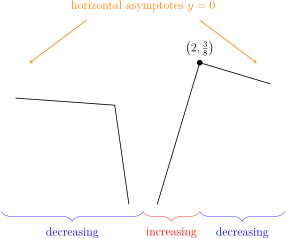
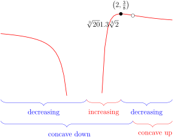
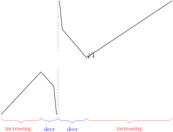
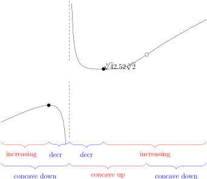
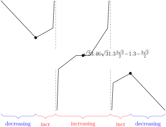
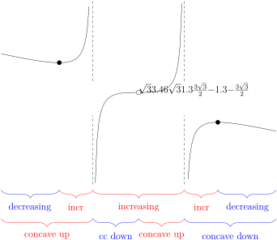
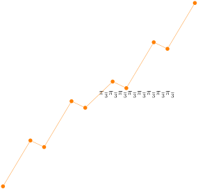
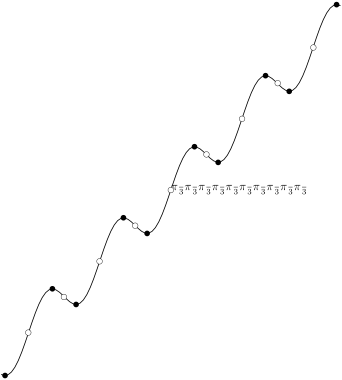
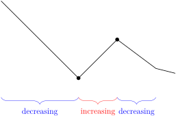
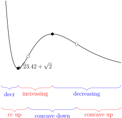

Section 4.6 Sketching Graphs
One of the most obvious applications of derivatives is to help us understand the shape of the graph of a function. In this section we will use our accumulated knowledge of derivatives to identify the most important qualitative features of graphs \(y=f(x)\text{.}\) The goal of this section is to highlight features of the graph \(y=f(x)\) that are easily
- determined from \(f(x)\) itself, and
- deduced from \(f'(x)\text{,}\) and
- read from \(f''(x)\text{.}\)
We will then use the ideas to sketch several examples.
Subsection 4.6.1 Domain, Intercepts and Asymptotes
Given a function \(f(x)\text{,}\) there are several important features that we can determine from that expression before examining its derivatives.
- The domain of the function — take note of values where \(f\) does not exist. If the function is rational, look for where the denominator is zero. Similarly be careful to look for roots of negative numbers or other possible sources of discontinuities.
- Intercepts — examine where the function crosses the \(x\)-axis and the \(y\)-axis by solving \(f(x)=0\) and computing \(f(0)\text{.}\)
- Vertical asymptotes — look for values of \(x\) at which \(f(x)\) blows up. If \(f(x)\) approaches either \(+\infty\) or \(-\infty\) as \(x\) approaches \(a\) (or possibly as \(x\) approaches \(a\) from one side) then \(x=a\) is a vertical asymptote to \(y=f(x)\text{.}\) When \(f(x)\) is a rational function (written so that common factors are cancelled), then \(y=f(x)\) has vertical asymptotes at the zeroes of the denominator.
- Horizontal asymptotes — examine the limits of \(f(x)\) as \(x\to+\infty\) and \(x\to-\infty\text{.}\) Often \(f(x)\) will tend to \(+\infty\) or to \(-\infty\) or to a finite limit \(L\text{.}\) If, for example, \(\lim\limits_{x\rightarrow+\infty}f(x)=L\text{,}\) then \(y=L\) is a horizontal asymptote to \(y=f(x)\) as \(x\rightarrow\infty\text{.}\)
Example 4.6.1. Domain, intercepts and asymptotes of \(\frac{x+1}{(x+3)(x-2)}\).
Consider the function
- We see that it is defined on all real numbers except \(x=-3,+2\text{.}\)
- Since \(f(0)=-1/6\) and \(f(x)=0\) only when \(x=-1\text{,}\) the graph has \(y\)-intercept \((0,-1/6)\) and \(x\)-intercept \((-1,0)\text{.}\)
- Since the function is rational and its denominator is zero at \(x=-3,+2\) it will have vertical asymptotes at \(x=-3,+2\text{.}\) To determine the shape around those asymptotes we need to examine the limits\begin{align*} \lim_{x\to -3} f(x) && \lim_{x\to2} f(x) \end{align*}Notice that when \(x\) is close to \(-3\text{,}\) the factors \((x+1)\) and \((x-2)\) are both negative, so the sign of \(f(x) = \frac{x+1}{x-2} \cdot \frac{1}{x+3}\) is the same as the sign of \(x+3\text{.}\) Hence\begin{align*} \lim_{x\to -3^+} f(x) &= +\infty & \lim_{x\to -3^-} f(x) &= -\infty \end{align*}A similar analysis when \(x\) is near \(2\) gives\begin{align*} \lim_{x\to 2^+} f(x) &= +\infty & \lim_{x\to 2^-} f(x) &= -\infty \end{align*}
- Finally since the numerator has degree 1 and the denominator has degree 2, we see that as \(x \to \pm \infty\text{,}\) \(f(x) \to 0\text{.}\) So \(y=0\) is a horizontal asymptote.
-
Since we know the behaviour around the asymptotes and we know the locations of the intercepts (as shown in the left graph below), we can then join up the pieces and smooth them out to get the a good sketch of this function (below right).

Subsection 4.6.2 First Derivative — Increasing or Decreasing
Now we move on to the first derivative, \(f'(x)\text{.}\) This is a good time to revisit the mean-value theorem (Theorem 3.13.5) and some of its consequences (Corollary 3.13.12). In particular, let us assume that \(f(x)\) is continuous on an interval \([A,B]\) and differentiable on \((A,B)\text{.}\) Then
-
if \(f'(x) \gt 0\) for all \(A \lt x \lt B\text{,}\) then \(f(x)\) is increasing on \((A,B)\)
— that is, for all \(A \lt a \lt b \lt B\text{,}\) \(f(a) \lt f(b)\text{.}\)
-
if \(f'(x) \lt 0\) for all \(A \lt x \lt B\text{,}\) then \(f(x)\) is decreasing on \((A,B)\)
— that is, for all \(A \lt a \lt b \lt B\text{,}\) \(f(a) \gt f(b)\text{.}\)
Thus the sign of the derivative indicates to us whether the function is increasing or decreasing. Further, as we discussed in Section 4.5.1, we should also examine points at which the derivative is zero — critical points — and where the derivative does not exist — singular points. These points may indicate a local maximum or minimum.
After studying the function \(f(x)\) as described above, we should compute its derivative \(f'(x)\text{.}\)
- Critical points — determine where \(f'(x)=0\text{.}\) At a critical point, \(f\) has a horizontal tangent.
- Singular points — determine where \(f'(x)\) is not defined. If \(f'(x)\) approaches \(\pm\infty\) as \(x\) approaches a singular point \(a\text{,}\) then \(f\) has a vertical tangent there when \(f\) approaches a finite value as \(x\) approaches \(a\) (or possibly approaches \(a\) from one side) and a vertical asymptote when \(f(x)\) approaches \(\pm\infty\) as \(x\) approaches \(a\) (or possibly approaches \(a\) from one side).
- Increasing and decreasing — where is the derivative positive and where is it negative. Notice that in order for the derivative to change sign, it must either pass through zero (a critical point) or have a singular point. Thus neighbouring regions of increase and decrease will be separated by critical and singular points.
Example 4.6.2. A simple polynomial.
Consider the function
-
Before we move on to derivatives, let us first examine the function itself as we did above.
- As \(f(x)\) is a polynomial its domain is all real numbers.
- Its \(y\)-intercept is at \((0,0)\text{.}\) We find its \(x\)-intercepts by factoring\begin{align*} f(x) &=x^4-6x^3 = x^3(x-6) \end{align*}So it crosses the \(x\)-axis at \(x=0,6\text{.}\)
- Again, since the function is a polynomial it does not have any vertical asymptotes. And since\begin{align*} \lim_{x \to \pm \infty} f(x) &= \lim_{x \to \pm \infty} x^4(1-6/x) = +\infty \end{align*}it does not have horizontal asymptotes — it blows up to \(+\infty\) as \(x\) goes to \(\pm\infty\text{.}\)
-
We can also determine where the function is positive or negative since we know it is continuous everywhere and zero at \(x=0,6\text{.}\) Thus we must examine the intervals
\begin{align*} (-\infty,0)&& (0,6) && (6,\infty) \end{align*}When \(x \lt 0\text{,}\) \(x^3 \lt 0\) and \(x-6 \lt 0\) so \(f(x) = x^3(x-6) = (\text{negative})(\text{negative}) \gt 0\text{.}\) Similarly when \(x \gt 6\text{,}\) \(x^3 \gt 0, x-6 \gt 0\) we must have \(f(x) \gt 0\text{.}\) Finally when \(0 \lt x \lt 6\text{,}\) \(x^3 \gt 0\) but \(x-6 \lt 0\) so \(f(x) \lt 0\text{.}\) Thus
interval \((-\infty,0)\) 0 \((0,6)\) 6 \((6,\infty)\) \(f(x)\) positive 0 negative 0 positive - Based on this information we can already construct a rough sketch.

- Now we compute its derivative\begin{align*} f'(x) &= 4x^3-18x^2 = 2x^2(2x-9) \end{align*}
-
Since the function is a polynomial, it does not have any singular points, but it does have two critical points at \(x=0, 9/2\text{.}\) These two critical points split the real line into 3 open intervals
\begin{align*} (-\infty, 0) && (0,9/2) && (9/2,\infty) \end{align*}We need to determine the sign of the derivative in each intervals.
- When \(x \lt 0\text{,}\) \(x^2 \gt 0\) but \((2x-9) \lt 0\text{,}\) so \(f'(x) \lt 0\) and the function is decreasing.
- When \(0 \lt x \lt 9/2\text{,}\) \(x^2 \gt 0\) but \((2x-9) \lt 0\text{,}\) so \(f'(x) \lt 0\) and the function is still decreasing.
- When \(x \gt 9/2\text{,}\) \(x^2 \gt 0\) and \((2x-9) \gt 0\text{,}\) so \(f'(x) \gt 0\) and the function is increasing.
We can then summarise this in the following table
interval \((-\infty,0)\) 0 \((0,9/2)\) 9/2 \((9/2,\infty)\) \(f'(x)\) negative 0 negative 0 positive decreasing horizontal
tangentdecreasing minimum increasing Since the derivative changes sign from negative to positive at the critical point \(x=9/2\text{,}\) this point is a minimum. Its \(y\)-value is
\begin{align*} y&=f(9/2) = \frac{9^3}{2^3}\left(\frac{9}{2} - 6\right)\\ &= \frac{3^6}{2^3} \cdot \left(\frac{-3}{2} \right) = -\frac{3^7}{2^4} \end{align*}On the other hand, at \(x=0\) the derivative does not change sign; while this point has a horizontal tangent line it is not a minimum or maximum.
-
Putting this information together we arrive at a quite reasonable sketch.

To improve upon this further we will examine the second derivative.
Subsection 4.6.3 Second Derivative — Concavity
The second derivative \(f''(x)\) tells us the rate at which the derivative changes. Perhaps the easiest way to understand how to interpret the sign of the second derivative is to think about what it implies about the slope of the tangent line to the graph of the function. Consider the following sketches of \(y=1+x^2\) and \(y=-1-x^2\text{.}\)

- In the case of \(y = f(x) = 1+x^2\) , \(f''(x) = 2 \gt 0\text{.}\) Notice that this means the slope, \(f'(x)\text{,}\) of the line tangent to the graph at \(x\) increases as \(x\) increases. Looking at the figure on the left above, we see that the graph always lies above the tangent lines.
- For \(y = f(x) = -1-x^2\) , \(f''(x) = -2 \lt 0\text{.}\) The slope, \(f'(x)\text{,}\) of the line tangent to the graph at \(x\) decreases as \(x\) increases. Looking at the figure on the right above, we see that the graph always lies below the tangent lines.
Similarly consider the following sketches of \(y=x^{-1/2}\) and \(y=\sqrt{4-x}\text{:}\)

Both of their derivatives, \(-\frac{1}{2}x^{-3/2}\) and \(-\frac{1}{2}(4-x)^{-1/2}\text{,}\) are negative, so they are decreasing functions. Examining second derivatives shows some differences.
- For the first function, \(y''(x) = \frac{3}{4}x^{-5/2} \gt 0\text{,}\) so the slopes of tangent lines are increasing with \(x\) and the graph lies above its tangent lines.
- However, the second function has \(y''(x) = -\frac{1}{4}(4-x)^{-3/2} \lt 0\) so the slopes of the tangent lines are decreasing with \(x\) and the graph lies below its tangent lines.
More generally
Definition 4.6.3.
Let \(f(x)\) be a continuous function on the interval \([a,b]\) and suppose its first and second derivatives exist on that interval.
-
If \(f''(x) \gt 0\) for all \(a \lt x \lt b\text{,}\) then the graph of \(f\) lies above its tangent lines for \(a \lt x \lt b\) and it is said to be concave up.

-
If \(f''(x) \lt 0\) for all \(a \lt x \lt b\text{,}\) then the graph of \(f\) lies below its tangent lines for \(a \lt x \lt b\) and it is said to be concave down.

-
If \(f''(c)=0\) for some \(a \lt c \lt b\text{,}\) and the concavity of \(f\) changes across \(x=c\text{,}\) then we call \((c,f(c))\) an inflection point.

Note that one might also see the terms
- “convex” or “convex up” used in place of “concave up”, and
- “concave” or “convex down” used to mean “concave down”.
To avoid confusion we recommend the reader stick with the terms “concave up” and “concave down”.
Let's now continue Example 4.6.2 by discussing the concavity of the curve.
Example 4.6.4. Continuation of 4.6.2.
Consider again the function
- Its first derivative is \(f'(x)=4x^3-18x^2\text{,}\) so\begin{align*} f''(x) &= 12x^2 - 36x = 12x(x-3) \end{align*}
-
Thus the second derivative is zero (and potentially changes sign) at \(x=0,3\text{.}\) Thus we should consider the sign of the second derivative on the following intervals
\begin{align*} (-\infty,0) && (0,3) && (3,\infty) \end{align*}A little algebra gives us
interval \((-\infty,0)\) 0 \((0,3)\) 3 \((3,\infty)\) \(f''(x)\) positive 0 negative 0 positive concavity up inflection down inflection up Since the concavity changes at both \(x=0\) and \(x=3\text{,}\) the following are inflection points
\begin{align*} (0,0) && (3,3^4-6\times3^3)=(3,-3^4) \end{align*} - Putting this together with the information we obtained earlier gives us the following sketch

Subsection 4.6.4 Symmetries
Before we proceed to some examples, we should examine some simple symmetries possessed by some functions. We'll look at three symmetries — evenness, oddness and periodicity. If a function possesses one of these symmetries then it can be exploited to reduce the amount of work required to sketch the graph of the function.
Let us start with even and odd functions.
Definition 4.6.5.
A function \(f(x)\) is said to be even if \(f(-x)=f(x)\) for all \(x\text{.}\)
Definition 4.6.6.
A function \(f(x)\) is said to be odd if \(f(-x)=-f(x)\) for all \(x\text{.}\)
Example 4.6.7. An even function and an odd funtion.
Let \(f(x) = x^2\) and \(g(x)=x^3\text{.}\) Then
Hence \(f(x)\) is even and \(g(x)\) is odd.
Notice any polynomial involving only even powers of \(x\) will be even
Similarly any polynomial involving only odd powers of \(x\) will be odd
Not all even and odd functions are polynomials. For example
are all even, while
are all odd. Indeed, given any function \(f(x)\text{,}\) the function
Now let us see how we can make use of these symmetries to make graph sketching easier. Let \(f(x)\) be an even function. Then
if and only if \(y_0= f(x_0) = f(-x_0)\) which is the case if and only if

Notice that the points \((x_0,y_0)\) and \((-x_0,y_0)\) are just reflections of each other across the \(y\)-axis. Consequently, to draw the graph \(y=f(x)\text{,}\) it suffices to draw the part of the graph with \(x\ge 0\) and then reflect it in the \(y\)–axis. Here is an example. The part with \(x\ge 0\) is on the left and the full graph is on the right.


Very similarly, when \(f(x)\) is an odd function then
if and only if

Now the symmetry is a little harder to interpret pictorially. To get from \((x_0,y_0)\) to \((-x_0,-y_0)\) one can first reflect \((x_0,y_0)\) in the \(y\)–axis to get to \((-x_0,y_0)\) and then reflect the result in the \(x\)–axis to get to \((-x_0,-y_0)\text{.}\) Consequently, to draw the graph \(y=f(x)\text{,}\) it suffices to draw the part of the graph with \(x\ge 0\) and then reflect it first in the \(y\)–axis and then in the \(x\)–axis. Here is an example. First, here is the part of the graph with \(x\ge 0\text{.}\)

Next, as an intermediate step (usually done in our heads rather than on paper), we add in the reflection in the \(y\)–axis.

Finally to get the full graph, we reflect the dashed line in the \(x\)–axis

and then remove the dashed line.

Let's do a more substantial example of an even function
Example 4.6.8. An even rational function.
Consider the function
- The function is even since\begin{align*} g(-x) &= \frac{(-x)^2-9}{(-x)^2+3} = \frac{x^2-9}{x^2+3} = g(x) \end{align*}Thus it suffices to study the function for \(x\geq0\) because we can then use the even symmetry to understand what happens for \(x \lt 0\text{.}\)
- The function is defined on all real numbers since its denominator \(x^2+3\) is never zero. Hence it has no vertical asymptotes.
- The \(y\)-intercept is \(g(0) = \frac{-9}{3} = -3\text{.}\) And \(x\)-intercepts are given by the solution of \(x^2-9=0\text{,}\) namely \(x=\pm 3\text{.}\) Note that we only need to establish \(x=3\) as an intercept. Then since \(g\) is even, we know that \(x=-3\) is also an intercept.
- To find the horizontal asymptotes we compute the limit as \(x\to+\infty\)\begin{align*} \lim_{x\to \infty} g(x) &= \lim_{x\to \infty} \frac{x^2-9}{x^2+3}\\ &= \lim_{x\to \infty} \frac{x^2(1-9/x^2)}{x^2(1+3/x^2)}\\ &= \lim_{x\to \infty} \frac{1-9/x^2}{1+3/x^2} = 1 \end{align*}Thus \(y=1\) is a horizontal asymptote. Indeed, this is also the asymptote as \(x\to-\infty\) since by the even symmetry\begin{align*} \lim_{x\to -\infty} g(x) &=\lim_{x\to \infty} g(-x) = \lim_{x\to \infty} g(x). \end{align*}
-
We can already produce a quite reasonable sketch just by putting in the horizontal asymptote and the intercepts and drawing a smooth curve between them.

Note that we have drawn the function as never crossing the asymptote \(y=1\text{,}\) however we have not yet proved that. We could by trying to solve \(g(x)=1\text{.}\)
\begin{align*} \frac{x^2-9}{x^2+3} &= 1\\ x^2-9 &= x^2+3\\ -9=3 & \text{ so no solutions.} \end{align*}Alternatively we could analyse the first derivative to see how the function approaches the asymptote.
- Now we turn to the first derivative:\begin{align*} g'(x) &= \frac{(x^2+3)(2x) - (x^2-9)(2x)}{(x^2+3)^2}\\ &= \frac{24x}{(x^2+3)^2} \end{align*}There are no singular points since the denominator is nowhere zero. The only critical point is at \(x=0\text{.}\) Thus we must find the sign of \(g'(x)\) on the intervals\begin{align*} (-\infty,0) && (0,\infty) \end{align*}
- When \(x \gt 0\text{,}\) \(24x \gt 0\) and \((x^2+3) \gt 0\text{,}\) so \(g'(x) \gt 0\) and the function is increasing. By even symmetry we know that when \(x \lt 0\) the function must be decreasing. Hence the critical point \(x=0\) is a local minimum of the function.
- Notice that since the function is increasing for \(x \gt 0\) and the function must approach the horizontal asymptote \(y=1\) from below. Thus the sketch above is quite accurate.
- Now consider the second derivative:\begin{align*} g''(x) &= \diff{}{x} \frac{24x}{(x^2+3)^2}\\ &= \frac{(x^2+3)^2 \cdot 24 - 24x\cdot 2 (x^2+3)\cdot2x}{(x^2+3)^4}\\ \end{align*}
cancel a factor of \((x^2+3)\)
\begin{align*} &= \frac{(x^2+3) \cdot 24 - 96x^2}{(x^2+3)^3}\\ &= \frac{72(1-x^2)}{(x^2+3)^3} \end{align*} - It is clear that \(g''(x) = 0\) when \(x=\pm 1\text{.}\) Note that, again, we can infer the zero at \(x=-1\) from the zero at \(x=1\) by the even symmetry. Thus we need to examine the sign of \(g''(x)\) the intervals\begin{align*} (-\infty,-1)&&(-1,1)&&(1,\infty) \end{align*}
- When \(|x| \lt 1\) we have \((1-x^2) \gt 0\) so that \(g''(x) \gt 0\) and the function is concave up. When \(|x| \gt 1\) we have \((1-x^2) \lt 0\) so that \(g''(x) \lt 0\) and the function is concave down. Thus the points \(x=\pm 1\) are inflection points. Their coordinates are \((\pm1, g(\pm1)) =(\pm 1,-2)\text{.}\)
-
Putting this together gives the following sketch:

Another symmetry we should consider is periodicity.
Definition 4.6.9.
A function \(f(x)\) is said to be periodic, with period \(P \gt 0\text{,}\) if \(f(x+P)=f(x)\) for all \(x\text{.}\)
Note that if \(f(x+P)=f(x)\) for all \(x\text{,}\) then replacing \(x\) by \(x+P\text{,}\) we have
More generally \(f(x+kP)=f(x)\) for all integers \(k\text{.}\) Thus if \(f\) has period \(P\text{,}\) then it also has period \(nP\) for all natural numbers \(n\text{.}\) The smallest period is called the fundamental period.
Example 4.6.10. \(\sin x\) is periodic.
The classic example of a periodic function is \(f(x)=\sin x\text{,}\) which has period \(2\pi\) since \(f(x+2\pi)=\sin(x+2\pi)=\sin x=f(x)\text{.}\)
If \(f(x)\) has period \(P\) then
if and only if \(y_0=f(x_0)=f(x_0+P)\) which is the case if and only if
\begin{gather*} (x_0+P,y_0)\text{ lies on the graph of }y=f(x) \end{gather*}and, more generally,
if and only if
\begin{gather*} (x_0+nP,y_0)\text{ lies on the graph of }y=f(x) \end{gather*}for all integers \(n\text{.}\)
Note that the point \((x_0+P,y_0)\) can be obtained by translating \((x_0,y_0)\) horizontally by \(P\text{.}\) Similarly the point \((x_0+nP,y_0)\) can be found by repeatedly translating \((x_0,y_0)\) horizontally by \(P\text{.}\)

Consequently, to draw the graph \(y=f(x)\text{,}\) it suffices to draw one period of the graph, say the part with \(0\le x\le P\text{,}\) and then translate it repeatedly. Here is an example. Here is a sketch of one period

and here is the full sketch.

Subsection 4.6.5 A Checklist for Sketching
Above we have described how we can use our accumulated knowledge of derivatives to quickly identify the most important qualitative features of graphs \(y=f(x)\text{.}\) Here we give the reader a quick checklist of things to examine in order to produce an accurate sketch based on properties that are easily read off from \(f(x)\text{,}\) \(f'(x)\) and \(f''(x)\text{.}\)
Subsubsection 4.6.5.1 A Sketching Checklist
-
Features of \(y = f(x)\) that are read off of \(f(x)\text{:}\)
- First check where \(f(x)\) is defined. Then
- y=f(x) is plotted only for \(x\)'s in the domain of \(f(x)\text{,}\) i.e. where \(f(x)\) is defined.
- \(y = f(x)\) has vertical asymptotes at the points where \(f(x)\) blows up to \(\pm\infty\text{.}\)
- Next determine whether the function is even, odd, or periodic.
- \(y=f(x)\) is first plotted for \(x\ge 0\) if the function is even or odd. The rest of the sketch is then created by reflections.
- \(y=f(x)\) is first plotted for a single period if the function is periodic. The rest of the sketch is then created by translations.
- Next compute \(f(0)\text{,}\) \(\lim_{x\rightarrow\infty} f(x)\) and \(\lim_{x\rightarrow-\infty} f(x)\) and look for solutions to \(f(x)=0\) that you can easily find. Then
- \(y = f(x)\) has \(y\)–intercept \(\big(0, f(0)\big)\text{.}\)
- \(y = f(x)\) has \(x\)–intercept \((a,0)\) whenever \(f(a)=0\)
- \(y = f(x)\) has horizontal asymptote \(y=Y\) if \(\lim_{x\rightarrow\infty} f(x)=L\) or \(\lim_{x\rightarrow-\infty} f(x)=L\text{.}\)
-
Features of \(y=f(x)\) that are read off of \(f'(x)\text{:}\)
- Compute \(f'(x)\) and determine its critical points and singular points, then
- \(y=f(x)\) has a horizontal tangent at the points where \(f'(x)=0\text{.}\)
- \(y=f(x)\) is increasing at points where \(f'(x) \gt 0\text{.}\)
- \(y=f(x)\) is decreasing at points where \(f'(x) \lt 0\text{.}\)
- \(y=f(x)\) has vertical tangents or vertical asymptotes at the points where \(f'(x)=\pm\infty\text{.}\)
-
Features of \(y=f(x)\) that are read off of \(f''(x)\text{:}\)
- Compute \(f''(x)\) and determine where \(f''(x)=0\) or does not exist, then
- \(y=f(x)\) is concave up at points where \(f''(x) \gt 0\text{.}\)
- \(y=f(x)\) is concave down at points where \(f''(x) \lt 0\text{.}\)
- \(y=f(x)\) may or may not have inflection points where \(f''(x)=0\text{.}\)
Subsection 4.6.6 Sketching Examples
Example 4.6.11. Sketch \(f(x)=x^3-3x+1\).
-
Reading from \(f(x)\text{:}\)
- The function is a polynomial so it is defined everywhere.
- Since \(f(-x) = -x^3+3x+1 \neq \pm f(x)\text{,}\) it is not even or odd. Nor is it periodic.
- The \(y\)-intercept is \(y=1\text{.}\) The \(x\)-intercepts are not easily computed since it is a cubic polynomial that does not factor nicely 1 . So for this example we don't worry about finding them.
- Since it is a polynomial it has no vertical asymptotes.
- For very large \(x\text{,}\) both positive and negative, the \(x^3\) term in \(f(x)\) dominates the other two terms so that\begin{align*} f(x)\rightarrow\begin{cases}+\infty &\text{as }x\rightarrow+\infty\\ -\infty &\text{as }x\rightarrow-\infty \end{cases} \end{align*}and there are no horizontal asymptotes.
-
We now compute the derivative:
\begin{align*} f'(x) &= 3x^2-3 = 3(x^2-1)=3(x+1)(x-1) \end{align*}- The critical points (where \(f'(x)=0\)) are at \(x=\pm 1\text{.}\) Further since the derivative is a polynomial it is defined everywhere and there are no singular points. The critical points split the real line into the intervals \((-\infty,-1),(-1,1)\) and \((1,\infty)\text{.}\)
- When \(x \lt -1\text{,}\) both factors \((x+1),(x-1) \lt 0\) so \(f'(x) \gt 0\text{.}\)
- Similarly when \(x \gt 1\text{,}\) both factors \((x+1),(x-1) \gt 0\) so \(f'(x) \gt 0\text{.}\)
- When \(-1 \lt x \lt 1\text{,}\) \((x-1) \lt 0\) but \((x+1) \gt 0\) so \(f'(x) \lt 0\text{.}\)
-
Summarising all this
\((-\infty,-1)\) -1 (-1,1) 1 \((1,\infty)\) \(f'(x)\) positive 0 negative 0 positive increasing maximum decreasing minimum increasing So \((-1,f(-1))=(-1,3)\) is a local maximum and \((1,f(1))=(1,-1)\) is a local minimum.
-
Compute the second derivative:
\begin{gather*} f''(x) = 6x \end{gather*}- The second derivative is zero when \(x=0\text{,}\) and the problem is quite easy to analyse. Clearly, \(f''(x) \lt 0\) when \(x \lt 0\) and \(f''(x) \gt 0\) when \(x \gt 0\text{.}\)
- Thus \(f\) is concave down for \(x \lt 0\text{,}\) concave up for \(x \gt 0\) and has an inflection point at \(x=0\text{.}\)
Putting this all together gives:

Example 4.6.12. Sketch \(f(x)=x^4-4x^3\).
-
Reading from \(f(x)\text{:}\)
- The function is a polynomial so it is defined everywhere.
- Since \(f(-x) = x^4+4x^3 \neq \pm f(x)\text{,}\) it is not even or odd. Nor is it periodic.
- The \(y\)-intercept is \(y=f(0)=0\text{,}\) while the \(x\)-intercepts are given by the solution of\begin{align*} f(x)=x^4-4x^3 &= 0\\ x^3(x-4)&=0 \end{align*}Hence the \(x\)-intercepts are \(0,4\text{.}\)
- Since \(f\) is a polynomial it does not have any vertical asymptotes.
- For very large \(x\text{,}\) both positive and negative, the \(x^4\) term in \(f(x)\) dominates the other term so that\begin{align*} f(x)\rightarrow\begin{cases}+\infty &\text{as }x\rightarrow+\infty\\ +\infty &\text{as }x\rightarrow-\infty \end{cases} \end{align*}and the function has no horizontal asymptotes.
-
Now compute the derivative \(f'(x)\text{:}\)
\begin{gather*} f'(x) = 4x^3-12x^2 = 4(x-3)x^2 \end{gather*}- The critical points are at \(x=0,3\text{.}\) Since the function is a polynomial there are no singular points. The critical points split the real line into the intervals \((-\infty,0)\text{,}\) \((0,3)\) and \((3,\infty)\text{.}\)
- When \(x \lt 0\text{,}\) \(x^2 \gt 0\) and \(x-3 \lt 0\text{,}\) so \(f'(x) \lt 0\text{.}\)
- When \(0 \lt x \lt 3\text{,}\) \(x^2 \gt 0\) and \(x-3 \lt 0\text{,}\) so \(f'(x) \lt 0\text{.}\)
- When \(3 \lt x\text{,}\) \(x^2 \gt 0\) and \(x-3 \gt 0\text{,}\) so \(f'(x) \gt 0\text{.}\)
-
Summarising all this
\((-\infty,0)\) 0 (0,3) 3 \((3,\infty)\) \(f'(x)\) negative 0 negative 0 positive decreasing horizontal
tangentdecreasing minimum increasing So the point \((3,f(3))=(3,-27)\) is a local minimum. The point \((0,f(0))=(0,0)\) is neither a minimum nor a maximum, even though \(f'(0)=0\text{.}\)
-
Now examine \(f''(x)\text{:}\)
\begin{gather*} f''(x) = 12x^2-24x=12x(x-2) \end{gather*}- So \(f''(x)=0\) when \(x=0,2\text{.}\) This splits the real line into the intervals \((-\infty,0),(0,2)\) and \((2,\infty)\text{.}\)
- When \(x \lt 0\text{,}\) \(x-2 \lt 0\) and so \(f''(x) \gt 0\text{.}\)
- When \(0 \lt x \lt 2\text{,}\) \(x \gt 0\) and \(x-2 \lt 0\) and so \(f''(x) \lt 0\text{.}\)
- When \(2 \lt x\text{,}\) \(x \gt 0\) and \(x-2 \gt 0\) and so \(f''(x) \gt 0\text{.}\)
- Thus the function is convex up for \(x \lt 0\text{,}\) then convex down for \(0 \lt x \lt 2\text{,}\) and finally convex up again for \(x \gt 2\text{.}\) Hence \((0,f(0))=(0,0)\) and \((2,f(2))=(2,-16)\) are inflection points.
Putting all this information together gives us the following sketch.

Example 4.6.13. \(f(x) = x^3 - 6x^2 + 9x - 54\).
-
Reading from \(f(x)\text{:}\)
- The function is a polynomial so it is defined everywhere.
- Since \(f(-x) = -x^3-6x^2-9x-54 \neq \pm f(x)\text{,}\) it is not even or odd. Nor is it periodic.
- The \(y\)-intercept is \(y=f(0)=-54\text{,}\) while the \(x\)-intercepts are given by the solution of\begin{align*} f(x)=x^3-6x^2+9x-54 &= 0\\ x^2(x-6) + 9(x-6) &=0\\ (x^2+9)(x-6) &= 0 \end{align*}Hence the only \(x\)-intercept is \(6\text{.}\)
- Since \(f\) is a polynomial it does not have any vertical asymptotes.
- For very large \(x\text{,}\) both positive and negative, the \(x^3\) term in \(f(x)\) dominates the other term so that\begin{align*} f(x)\rightarrow\begin{cases}+\infty &\text{as }x\rightarrow+\infty\\ -\infty &\text{as }x\rightarrow-\infty \end{cases} \end{align*}and the function has no horizontal asymptotes.
-
Now compute the derivative \(f'(x)\text{:}\)
\begin{align*} f'(x) &= 3x^2-12x+9\\ &= 3(x^2-4x+3) = 3(x-3)(x-1) \end{align*}- The critical points are at \(x=1,3\text{.}\) Since the function is a polynomial there are no singular points. The critical points split the real line into the intervals \((-\infty,1)\text{,}\) \((1,3)\) and \((3,\infty)\text{.}\)
- When \(x \lt 1\text{,}\) \((x-1) \lt 0\) and \((x-3) \lt 0\text{,}\) so \(f'(x) \gt 0\text{.}\)
- When \(1 \lt x \lt 3\text{,}\) \((x-1) \gt 0\) and \((x-3) \lt 0\text{,}\) so \(f'(x) \lt 0\text{.}\)
- When \(3 \lt x\text{,}\) \((x-1) \gt 0\) and \((x-3) \gt 0\text{,}\) so \(f'(x) \gt 0\text{.}\)
-
Summarising all this
\((-\infty,1)\) 1 (1,3) 3 \((3,\infty)\) \(f'(x)\) positive 0 negative 0 positive increasing maximum decreasing minimum increasing So the point \((1,f(1))=(1,-50)\) is a local maximum. The point \((3,f(3))=(3,-54)\) is a local minimum.
-
Now examine \(f''(x)\text{:}\)
\begin{gather*} f''(x) = 6x-12 \end{gather*}- So \(f''(x)=0\) when \(x=2\text{.}\) This splits the real line into the intervals \((-\infty,2)\) and \((2,\infty)\text{.}\)
- When \(x \lt 2\text{,}\) \(f''(x) \lt 0\text{.}\)
- When \(x \gt 2\text{,}\) \(f''(x) \gt 0\text{.}\)
- Thus the function is convex down for \(x \lt 2\text{,}\) then convex up for \(x \gt 2\text{.}\) Hence \((2,f(2))=(2,-52)\) is an inflection point.
Putting all this information together gives us the following sketch.

and if we zoom in around the interesting points (minimum, maximum and inflection point), we have

An example of sketching a simple rational function.
Example 4.6.14. \(f(x) = \dfrac{x}{x^2-4}\).
-
Reading from \(f(x)\text{:}\)
- The function is rational so it is defined except where its denominator is zero — namely at \(x=\pm2\text{.}\)
- Since \(f(-x) = \dfrac{-x}{x^2-4} = - f(x)\text{,}\) it is odd. Indeed this means that we only need to examine what happens to the function for \(x \geq 0\) and we can then infer what happens for \(x\leq 0\) using \(f(-x) = -f(x)\text{.}\) In practice we will sketch the graph for \(x\geq0\) and then infer the rest from this symmetry.
- The \(y\)-intercept is \(y=f(0)=0\text{,}\) while the \(x\)-intercepts are given by the solution of \(f(x)=0\text{.}\) So the only \(x\)-intercept is \(0\text{.}\)
- Since \(f\) is rational, it may have vertical asymptotes where its denominator is zero — at \(x=\pm 2\text{.}\) Since the function is odd, we only have to analyse the asymptote at \(x=2\) and we can then infer what happens at \(x=-2\) by symmetry.\begin{align*} \lim_{x\to 2^+} f(x) &= \lim_{x\to 2^+} \frac{x}{(x-2)(x+2)} = + \infty\\ \lim_{x\to 2^-} f(x) &= \lim_{x\to 2^-} \frac{x}{(x-2)(x+2)} = - \infty \end{align*}
- We now check for horizontal asymptotes:\begin{align*} \lim_{x\to +\infty} f(x) &= \lim_{x\to +\infty} \frac{x}{x^2-4}\\ &= \lim_{x\to +\infty} \frac{1}{x-4/x} = 0 \end{align*}
-
Now compute the derivative \(f'(x)\text{:}\)
\begin{align*} f'(x) &= \frac{(x^2-4)\cdot 1 - x\cdot 2x}{(x^2-4)^2}\\ &= \frac{-(x^2+4)}{(x^2-4)^2} \end{align*}- Hence there are no critical points. There are singular points where the denominator is zero, namely \(x=\pm2\text{.}\) Before we proceed, notice that the numerator is always negative and the denominator is always positive. Hence \(f'(x) \lt 0\) except at \(x=\pm 2\) where it is undefined.
- The function is decreasing except at \(x=\pm 2\text{.}\)
- We already know that at \(x = 2\) we have a vertical asymptote and that \(f'(x) \lt 0\) for all \(x\text{.}\) So\begin{gather*} \lim_{x\rightarrow 2} f'(x) = -\infty \end{gather*}
-
Summarising all this
[0,2) 2 \((2,\infty)\) \(f'(x)\) negative DNE negative decreasing vertical
asymptotedecreasing Remember — we will draw the graph for \(x\geq 0\) and then use the odd symmetry to infer the graph for \(x \lt 0\text{.}\)
-
Now examine \(f''(x)\text{:}\)
\begin{align*} f''(x) &=- \frac{(x^2-4)^2\cdot(2x) - (x^2+4)\cdot2\cdot 2x\cdot(x^2-4)}{(x^2-4)^4}\\ &=- \frac{(x^2-4)\cdot(2x) - (x^2+4)\cdot4x}{(x^2-4)^3}\\ &=- \frac{2x^3-8x - 4x^3-16x}{(x^2-4)^3}\\ &= \frac{2x(x^2+12)}{(x^2-4)^3} \end{align*}- So \(f''(x)=0\) when \(x=0\) and does not exist when \(x=\pm 2\text{.}\) This splits the real line into the intervals \((-\infty,-2), (-2,0), (0,2)\) and \((2,\infty)\text{.}\) However we only need to consider \(x \geq 0\) (because of the odd symmetry).
- When \(0 \lt x \lt 2\text{,}\) \(x \gt 0, (x^2+12) \gt 0\) and \((x^2-4) \lt 0\) so \(f''(x) \lt 0\text{.}\)
- When \(x \gt 2\text{,}\) \(x \gt 0, (x^2+12) \gt 0\) and \((x^2-4) \gt 0\) so \(f''(x) \gt 0\text{.}\)
Putting all this information together gives the following sketch for \(x \geq 0\text{:}\)

We can then draw in the graph for \(x \lt 0\) using \(f(-x) = -f(x)\text{:}\)

Notice that this means that the concavity changes at \(x=0\text{,}\) so the point \((0,f(0))=(0,0)\) is a point of inflection (as indicated).
This final example is more substantial since the function has singular points (points where the derivative is undefined). The analysis is more involved.
Example 4.6.15. \(f(x)=\root{3}\of{\frac{x^2}{(x-6)^2}} \).
-
Reading from \(f(x)\text{:}\)
- First notice that we can rewrite\begin{align*} f(x) &= \root{3}\of{\frac{x^2}{(x-6)^2}} = \root{3}\of{\frac{x^2}{x^2\cdot(1-6/x)^2}} = \root{3}\of{\frac{1}{(1-6/x)^2}} \end{align*}
- The function is the cube root of a rational function. The rational function is defined except at \(x=6\text{,}\) so the domain of \(f\) is all reals except \(x=6\text{.}\)
- Clearly the function is not periodic, and examining\begin{align*} f(-x) &= \root{3}\of{\frac{ 1}{(1-6/(-x))^2}}\\ &= \root{3}\of{\frac{1}{(1+6/x)^2}} \neq \pm f(x) \end{align*}shows the function is neither even nor odd.
- To compute horizontal asymptotes we examine the limit of the portion of the function inside the cube-root\begin{gather*} \lim_{x\rightarrow\pm\infty} \frac{1}{(1-\frac{6}{x})^2} =1 \end{gather*}This means we have\begin{gather*} \lim_{x\rightarrow\pm\infty} f(x)=1 \end{gather*}That is, the line \(y=1\) will be a horizontal asymptote to the graph \(y=f(x)\) both for \(x\rightarrow+\infty\) and for \(x\rightarrow-\infty\text{.}\)
- Our function \(f(x)\rightarrow+\infty\) as \(x\rightarrow 6\text{,}\) because of the \((1-6/x)^2\) in its denominator. So \(y=f(x)\) has \(x=6\) as a vertical asymptote.
- First notice that we can rewrite
-
Now compute \(f'(x)\text{.}\) Since we rewrote
\begin{align*} f(x) &= \root{3}\of{\frac{1}{(1-6/x)^2}} =\left(1-\frac{6}{x}\right)^{-\frac{2}{3}} \end{align*}we can use the chain rule
\begin{gather*} f'(x) = -\frac{2}{3}{\left(1-\frac{6}{x}\right)}^{-\frac{5}{3}}\frac{6}{x^2}\\ =-4 {\left(\frac{x-6}{x}\right)}^{-\frac{5}{3}}\frac{1}{x^2}\\ =-4 {\left(\frac{1}{x-6}\right)}^{\frac{5}{3}}\frac{1}{x^{\frac{1}{3}}} \end{gather*}- Notice that the derivative is nowhere equal to zero, so the function has no critical points. However there are two places the derivative is undefined. The terms\begin{align*} \left(\frac{1}{x-6}\right)^{\frac{5}{3}} && \frac{1}{x^{\frac{1}{3}}} \end{align*}are undefined at \(x=6,0\) respectively. Hence \(x=0,6\) are singular points. These split the real line into the intervals \((-\infty,0), (0,6)\) and \((6,\infty)\text{.}\)
- When \(x \lt 0\text{,}\) \((x-6) \lt 0\text{,}\) we have that \((x-6)^{-\frac53} \lt 0\) and \(x^{-\frac13} \lt 0\) and so \(f'(x)=-4 \cdot (\text{negative})\cdot(\text{negative}) \lt 0 \text{.}\)
- When \(0 \lt x \lt 6\text{,}\) \((x-6) \lt 0\text{,}\) we have that \((x-6)^{-\frac53} \lt 0\) and \(x^{-\frac13} \gt 0\) and so \(f'(x) \gt 0\text{.}\)
- When \(x \gt 6\text{,}\) \((x-6) \gt 0\text{,}\) we have that \((x-6)^{-\frac53} \gt 0\) and \(x^{-\frac13} \gt 0\) and so \(f'(x) \lt 0\text{.}\)
- We should also examine the behaviour of the derivative as \(x \to 0\) and \(x\to 6\text{.}\)\begin{align*} \lim_{x \to 0^-} f'(x) &= -4 \left( \lim_{x \to 0^-} (x-6)^{-\frac53} \right) \left( \lim_{x \to 0^-} x^{-\frac13} \right) = -\infty\\ \lim_{x \to 0^+} f'(x) &= -4 \left( \lim_{x \to 0^+} (x-6)^{-\frac53} \right) \left( \lim_{x \to 0^+} x^{-\frac13} \right) = +\infty\\ \lim_{x \to 6^-} f'(x) &= -4 \left( \lim_{x \to 6^-} (x-6)^{-\frac53} \right) \left( \lim_{x \to 6^-} x^{-\frac13} \right) = +\infty\\ \lim_{x \to 6^+} f'(x) &= -4 \left( \lim_{x \to 6^+} (x-6)^{-\frac53} \right) \left( \lim_{x \to 6^+} x^{-\frac13} \right) = -\infty \end{align*}We already know that \(x=6\) is a vertical asymptote of the function, so it is not surprising that the lines tangent to the graph become vertical as we approach 6. The behavior around \(x=0\) is less standard, since the lines tangent to the graph become vertical, but \(x=0\) is not a vertical asymptote of the function. Indeed the function takes a finite value \(y=f(0)=0\text{.}\)
-
Summarising all this
\((-\infty,0)\) 0 (0,6) 6 \((6,\infty)\) \(f'(x)\) negative DNE positive DNE negative decreasing vertical
tangentsincreasing vertical
asymptotedecreasing
- Notice that the derivative is nowhere equal to zero, so the function has no critical points. However there are two places the derivative is undefined. The terms
-
Now look at \(f''(x)\text{:}\)
\begin{align*} f''(x)&=-4\diff{}{x} \left[{\left(\frac{1}{x-6}\right)}^{\frac{5}{3}} \frac{1}{x^{\frac{1}{3}}} \right]\\ \amp=-4 \left[-\frac{5}{3}{\left(\frac{1}{x-6}\right)}^{\frac{8}{3}} \frac{1}{x^{\frac{1}{3}}} -\frac{1}{3} {\left(\frac{1}{x-6}\right)}^{\frac{5}{3}} \frac{1}{x^{\frac{4}{3}}}\right]\\ &=\frac{4}{3} {\left(\frac{1}{x-6}\right)}^{\frac{8}{3}} \frac{1}{x^{\frac{4}{3}}}\ \left[5x +(x-6)\right]\\ &=8 {\left(\frac{1}{x-6}\right)}^{\frac{8}{3}} \frac{1}{x^{\frac{4}{3}}}\ \left[x-1\right] \end{align*}Oof!
-
Both of the factors \({\Big(\frac{1}{x-6}\Big)}^{\frac{8}{3}} ={\Big(\frac{1}{\root{3}\of{x-6}}\Big)}^8\) and \(\frac{1}{x^{\frac{4}{3}}} =\Big(\frac{1}{\root{3}\of{x}}\Big)^4\) are even powers and so are positive (though possibly infinite). So the sign of \(f''(x)\) is the same as the sign of the factor \(x-1\text{.}\) Thus
\((-\infty,1)\) 1 \((1,\infty)\) \(f''(x)\) negative 0 positive concave down inflection
pointconcave up
-
Here is a sketch of the graph \(y=f(x)\text{.}\)

It is hard to see the inflection point at \(x=1\text{,}\) \(y=f(1)=\frac{1}{ \root{3}\of{25} }\) in the above sketch. So here is a blow up of the part of the sketch around \(x=1\text{.}\)

And if we zoom in even more we have

Subsection 4.6.7 Exercises
Exercises 4.6.7.1 Exercises for 4.6.1
1.
Suppose \(f(x)\) is a function given by
where \(g(x)\) is also a function. True or false: \(f(x)\) has a vertical asymptote at \(x=-3\text{.}\)
What happens if \(g(x)=x+3\text{?}\)
In general, false.
In general, this is false. For example, the function \(f(x) = \dfrac{x^2-9}{x^2-9}\) has no vertical asymptotes, because it is equal to 1 in every point in its domain (and is undefined when \(x=\pm3\)).
However, it is certainly possible that \(f(x)\) has a vertical asymptote at \(x=-3\text{.}\) For example, \(f(x)=\dfrac{1}{x^2-9}\) has a vertical asymptote at \(x=-3\text{.}\) More generally, if \(g(x)\) is continuous and \(g(-3)\ne 0\text{,}\) then \(f(x)\) has a vertical asympotote at \(x=-3\text{.}\)
2.
Match the functions \(f(x)\text{,}\) \(g(x)\text{,}\) \(h(x)\text{,}\) and \(k(x)\) to the curves \(y=A(x)\) through \(y=D(x)\text{.}\)

Use domains and intercepts to distinguish between the functions.
\(f(x)=A(x)\)
\(g(x)=C(x)\)
\(h(x)=B(x)\)
\(k(x)=D(x)\)
Since \(x^2+1\) and \(x^2+4\) are always positive, \(f(x)\) and \(h(x)\) are defined over all real numbers. So, \(f(x)\) and \(h(x)\) correspond to \(A(x)\) and \(B(x)\text{.}\) Which is which? \(A(0)=1=f(0)\) while \(B(0)=2=h(0)\text{,}\) so \(\textcolor{orange}{A(x)=f(x)}\) and \(\textcolor{red}{B(x)=h(x)}\text{.}\)
That leaves \(g(x)\) and \(k(x)\) matching to \(C(x)\) and \(D(x)\text{.}\) The domain of \(g(x)\) is all \(x\) such that \(x^2-1\ge0\text{.}\) That is, \(|x|\ge1\text{,}\) like \(C(x)\text{.}\) The domain of \(k(x)\) is all \(x\) such that \(x^2-4\ge0\text{.}\) That is, \(|x|\ge2\text{,}\) like \(D(x)\text{.}\) So, \(\textcolor{blue}{C(x)=g(x)}\) and \(\textcolor{green}{D(x)=k(x)}\text{.}\)
3.
Below is the graph of
- What is \(p\text{?}\)
- What is \(b\) (marked on the graph)?
- What is the \(x\)-intercept of \(f(x)\text{?}\)
Remember \(\log(x+p)\) is the natural logarithm of \(x+p\text{,}\) \(\log_e(x+p)\text{.}\)
To find \(p\text{,}\) the equation \(f(0)=2\) gives you two possible values of \(p\text{.}\) Consider the domain of \(f(x)\) to decide between them.
(a) \(p=e^2\)
(b) \(b=-e^2\text{,}\) \(1-e^2\)
(a) Since \(f(0)=2\text{,}\) we solve
We know that \(p\) is \(e^2\) or \(\dfrac{1}{e^2}\text{,}\) but we have to decide between the two. In both cases, \(f(0)=2\text{.}\) Let's consider the domain of \(f(x)\text{.}\) Since \(\log^2(x+p)\) is never negative, the square root does not restrict our domain. However, we can only take the logarithm of positive numbers. Therefore, the domain is
If \(p=\dfrac{1}{e^2}\text{,}\) then the domain of \(f(x)\) is \(\left(-\dfrac{1}{e^2},\infty\right)\text{.}\) In particular, since \(-\dfrac{1}{e^2} \gt -1\text{,}\) the domain of \(f(x)\) does not include \(x=-1\text{.}\) However, it is clear from the graph that \(f(-1)\) exists. So, \(p=e^2\text{.}\)
(b) Now, we need to figure out what \(b\) is. Notice that \(b\) is the end of the domain of \(f(x)\text{,}\) which we already found to be \((-p,\infty)\text{.}\) So, \(b=-p=-e^2\text{.}\)
(As a quick check, if we take \(e\approx 2.7\text{,}\) then \(-e^2=-7.29\text{,}\) and this looks about right on the graph.)
(c) The \(x\)-intercept is the value of \(x\) for which \(f(x)=0\text{:}\)
The \(x\)-intercept is \(1-e^2\text{.}\)
(As another quick check, the \(x\)-intercept we found is a distance of 1 from the vertical asymptote, and this looks about right on the graph.)
4.
Find all asymptotes of \(f(x)=\dfrac{x(2x+1)(x-7)}{3x^3-81}\text{.}\)
Check for horizontal asymptotes by evaluating \(\ds\lim_{x \to \pm \infty}f(x)\text{,}\) and check for vertical asymptotes by finding any value of \(x\) near which \(f(x)\) blows up.
vertical asymptote at \(x=3\text{;}\) horizontal asymptotes \(\ds\lim_{x \to \pm \infty}f(x)=\dfrac{2}{3}\)
Vertical asymptotes occur where the function blows up. In rational functions, this can only happen when the denominator goes to 0. In our case, the denominator is 0 when \(x=3\text{,}\) and in this case the numerator is \(147\text{.}\) That means that as \(x\) gets closer and closer to 3, the numerator gets closer and closer to 147 while the denominator gets closer and closer to 0, so \(|f(x)|\) grows without bound. That is, there is a vertical asymptote at \(x=3\text{.}\)
The horizontal asymptotes are found by taking the limits as \(x\) goes to infinity and negative infinity. In our case, they are the same, so we condense our work.
where \(a\text{,}\) \(b\text{,}\) ad \(c\) are some constants. Remember, for rational functions, you can figure out the end behaviour by looking only at the terms with the highest degree--the others won't matter, so we don't bother finding them. From here, we divide the numerator and denominator by the highest power of \(x\) in the denominator, \(x^3\text{.}\)
\begin{align*} &=\lim_{x \to \pm \infty}\dfrac{2x^3+ax^2+bx+c}{3x^3-81}\left(\frac{\tfrac{1}{x^3}}{\tfrac{1}{x^3}}\right)\\ &=\lim_{x \to \pm \infty}\dfrac{2+\tfrac{a}{x}+\tfrac{b}{x^2}+\tfrac{c}{x^3}}{3-\tfrac{81}{x^3}}\\ &=\dfrac{2+0+0+0}{3-0}=\frac{2}{3} \end{align*}So there is a horizontal asymptote of \(y=\dfrac{2}{3}\) both as \(x \to \infty\) and as \(x \to -\infty\text{.}\)
5.
Find all asymptotes of \(f(x)=10^{3x-7}\text{.}\)
Check for horizontal asymptotes by evaluating \(\ds\lim_{x \to \pm \infty}f(x)\text{,}\) and check for vertical asymptotes by finding any value of \(x\) near which \(f(x)\) blows up.
horizontal asymptote \(y=0\) as \(x \to -\infty\text{;}\) no other asymptotes
Since \(f(x)\) is continuous over all real numbers, it has no vertical asymptote.
To find the horizontal asymptotes, we evaluate \(\ds\lim_{x \to \pm \infty}f(x)\text{.}\)
So, there's no horizontal asymptote as \(x \to \infty\text{.}\)
\begin{align*} \lim_{x \to -\infty}10^{3x-7}&=\underbrace{\lim_{X \to -\infty}10^{X}}_{\mbox{let }X=3x-7}\\ &=\underbrace{\lim_{X' \to \infty}10^{-X'}}_{\mbox{let }X'=-X}\\ &=\lim_{X' \to \infty}\frac{1}{10^{X'}}\\ &=0 \end{align*}That is, \(y=0\) is a horizontal asymptote as \(x \to -\infty\text{.}\)
Exercises 4.6.7.2 Exercises for 4.6.2
1.
Match each function graphed below to its derivative from the list. (For example, which function on the list corresponds to \(A'(x)\text{?}\))
The \(y\)-axes have been scaled to make the curve's behaviour clear, so the vertical scales differ from graph to graph.
\(l(x)=(x-2)^4\)
\(m(x)=(x-2)^4(x+2)\)
\(n(x)=(x-2)^2(x+2)^2\)
\(o(x)=(x-2)(x+2)^3\)
\(p(x)=(x+2)^4\)
For each of the graphs, consider where the derivative is positive, negative, and zero.
Functions \(A(x)\) and \(B(x)\) share something in common that sets them apart from the others: they have a horizontal tangent line only once. In particular, \(A'(-2) \neq 0\) and \(B'(2) \neq 0\text{.}\) The only listed functions that do not have two distinct roots are \(l(x)\) and \(p(x)\text{.}\) Since \(l(-2) \neq 0\) and \(p(2) \neq 0\text{,}\) we conclude
Function \(C(x)\) is never decreasing. Its tangent line is horizontal when \(x = \pm 2\text{,}\) but the curve never decreases, so \(C'(x) \geq 0\) for all \(x\) and \(C'(2)=C'(-2)=0\text{.}\) The only function that matches this is \(n(x)=(x-2)^2(x+2)^2\text{.}\) Since its linear terms have even powers, it is never negative, and its roots are precisely \(x=\pm 2\text{.}\)
For the functions \(D(x)\) and \(E(x)\) we consider their behaviour near \(x=0\text{.}\) \(D(x)\) is decreasing near \(x=0\text{,}\) so \(D'(0) \lt 0\text{,}\) which matches with \(o(0) \lt 0\text{.}\) Contrastingly, \(E(x)\) is increasing near zero, so \(E'(0) \gt 0\text{,}\) which matches with \(m(0) \gt 0\text{.}\)
2. 2015Q.
Find the interval(s) where \(f(x)=\dfrac{e^x}{x+3}\) is increasing.
Where is \(f'(x) \gt 0\text{?}\)
\((-2,\infty)\)
The domain of \(f(x)\) is all real numbers except \(-3\) (because when \(x=-3\) the denominator is zero). For \(x\neq -3\text{,}\) we differentiate using the quotient rule:
Since \(e^x\) and \((x+3)^2\) are positive for every \(x\) in the domain of \(f(x)\text{,}\) the sign of \(f'(x)\) is the same as the sign of \(x+2\text{.}\) We conclude that \(f(x)\) is increasing for every \(x\) in its domain with \(x+2 \gt 0\text{.}\) That is, over the interval \((-2,\infty)\text{.}\)
3. 2015Q.
Find the interval(s) where \(f(x)=\dfrac{\sqrt{x-1}}{2x+4}\) is increasing.
Consider the signs of the numerator and the denominator of \(f'(x)\text{.}\)
\((1,4)\) and \([1,4)\) are both acceptable answers
Since we can't take the square root of a negative number, \(f(x)\) is only defined when \(x \ge 1\text{.}\) Furthermore, since we can't have a zero as a denominator, \(x=-2\) is not in the domain--but as long as \(x \ge 1\text{,}\) also \(x \ne -2\text{.}\) So, the domain of the function is \([1,\infty)\text{.}\)
In order to find where is \(f(x)\) increasing, we find where is \(f'(x)\) positive.
The denominator is never negative, so \(f(x)\) is increasing when the numerator of \(f'(x)\) is positive, i.e. when \(4-x \gt 0\text{,}\) or \(x \lt 4\text{.}\) Recalling that the domain of definition for \(f(x)\) is \([1,+\infty)\text{,}\) we conclude that \(f(x)\) is increasing on the interval \((1,4)\text{.}\)
Remark: \([1,4)\) is also an acceptable answer, but \([1,4]\) is not. At \(x=4\) the function has a local maximum: \(f(x)\) is increasing before \(x=4\) and decreasing after.
4. 2015Q.
Find the interval(s) where \(f(x)=2\arctan (x) - \log(1+x^2)\) is increasing.
Remember \(\ds\diff{}{x}\{\arctan x\}=\dfrac{1}{1+x^2}\text{.}\)
\((-\infty,1)\)
The domain of arctangent is all real numbers. The domain of the logarithm function is all positive numbers, and \(1+x^2\) is positive for all \(x\text{.}\) So, the domain of \(f(x)\) is all real numbers.
In order to find where is \(f(x)\) increasing, we find where is \(f'(x)\) positive.
Since the denominator is always positive, \(f(x)\) is increasing when when \(2-2x \gt 0\text{.}\)We conclude that \(f(x)\) is increasing on the interval \((-\infty,1)\text{.}\)
Exercises 4.6.7.3 Exercises for 4.6.3
1.
On the graph below, mark the intervals where \(f''(x) \gt 0\) (i.e. \(f(x)\) is concave up) and where \(f''(x) \lt 0\) (i.e. \(f(x)\) is concave down).
There are two intervals where the function is concave up, and two where it is concave down.
In the graph above, the concave-up sections are marked in red. These are where the graph has an increasing derivative; equivalently, where the graph lies above its tangent lines; more descriptively, where it curves like a smiley face.
Concave-down sections are marked in blue. These are where the graph has a decreasing derivative; equivalently, where the graph lies below its tangent lines; more descriptively, where it curves like a frowney face.
2.
Sketch a curve that is:
- concave up when \(|x| \gt 5\text{,}\)
- concave down when \(|x| \lt 5\text{,}\)
- increasing when \(x \lt 0\text{,}\) and
- decreasing when \(x \gt 0\text{.}\)
Try allowing your graph to have horizontal asymptotes. For example, let the function get closer and closer to the \(x\)-axis (or another horizontal line) without touching it.
The most basic shape of the graph is given by the last two bullet points:
The curve is concave down over the interval \((-5,5)\text{,}\) so let's give it a frowney-face curvature there.
Finally, when \(x \gt 5\) or \(x \lt -5\text{,}\) our curve should be concave up, so let's give it smiley-face curvature there, without changing its basic increasing/decreasing shape.
This finishes our sketch.
3.
Suppose \(f(x)\) is a function whose second derivative exists and is continuous for all real numbers.
True or false: if \(f''(3)=0\text{,}\) then \(x=3\) is an inflection point of \(f(x)\text{.}\)
Remark: compare to Question 4.6.7.3.7
Consider \(f(x)=(x-3)^4\text{.}\)
In general, false.
An inflection point is where the concavity of a function changes. It is possible that \(x=3\) is an inflection point, but it is also possible that is not. So, the statement is false, in general.
For example, let \(f(x)=(x-3)^4\text{.}\) Since \(f(x)\) is a polynomial, all its derivatives exist and are continuous. \(f''(x)=12(x-3)^2\text{,}\) so \(f(3)=0\text{.}\) However, since \(f''(x)\) is something squared, it is never negative, so \(f(x)\) is never concave down. Since \(f(x)\) is never concave down, it never changes concavity, so it has no inflection points.
Remark: finding inflection points is somewhat reminiscent of finding local extrema. To find local extrema, we first find all critical and singular points, since local extrema can only occur there. Then, we have to figure out which critical and singular points are actually local extrema. Similarly, if you want to find inflection points, start by finding where \(f''(x)\) is zero or non-existant, because inflection points can only occur there (see Question 4.6.7.3.7). Then, you still have to check whether those points are actually inflection points.
4. 1997D.
Find all inflection points for the graph of \(f(x)=3x^5-5x^4+13x\text{.}\)
\(x=1,\ y=11\)
Inflection points occur where \(f''(x)\) changes sign. Since \(f(x)\) is a polynomial, its first and second derivatives exist everywhere, and are themselves polynomials. In particular,
The second derivative is negative for \(x \lt 1\) and positive for \(x \gt 1\text{.}\) Thus the concavity changes between concave up and concave down at {\(x=1,\ y=11\)}.
This is the only inflection point. It is true that \(f''(0)=0\text{,}\) but for values of \(x\) both a little larger than and a little smaller than 0, \(f''(x) \lt 0\text{,}\) so the concavity does not change at \(x=0\text{.}\)
Questions 4.6.7.3.5 through 4.6.7.3.7 ask you to show that certain things are true. Give a clear explanation using concepts and theorems from this semester.
5. 1997A.
Let
Show that \(f(x)\) has exactly one inflection point.
You must show it has at least one inflection point (try the Intermediate Value Theorem), and at most one inflection point (consider whether the second derivative is increasing or decreasing).
Let
Then \(g'(x)=3x^2+5\text{,}\) which is always positive. That means \(g(x)\) is strictly increasing for all \(x\text{.}\) So, \(g(x)\) can change signs once, from negative to positive, but it can never change back to negative. An inflection point of \(f(x)\) occurs when \(g(x)\) changes signs. So, \(f(x)\) has at most one inflection point.
Since \(g(x)\) is continuous, we can apply the Intermediate Value Theorem to it. Notice \(g(3) \gt 0\) while \(g(0) \lt 0\text{.}\) By the IVT, \(g(x)=0\) for at least one \(x \in (0,3)\text{.}\) Since \(g(x)\) is strictly increasing, at the point where \(g(x)=0\text{,}\) \(g(x)\) changes from negative to positive. So, the concavity of \(f(x)\) changes. Therefore, \(f(x)\) has at least one inflection point.
Now that we've shown that \(f(x)\) has at most one inflection point, and at least one inflection point, we conclude it has exactly one inflection point.
In order to show that \(f(x)\) has exactly one inflection point, we will show that is has at least one, and no more than one.
Let
Then \(g'(x)=3x^2+5\text{,}\) which is always positive. That means \(g(x)\) is strictly increasing for all \(x\text{.}\) So, \(g(x)\) can change signs once, from negative to positive, but it can never change back to negative. An inflection point of \(f(x)\) occurs when \(g(x)\) changes signs. So, \(f(x)\) has at most one inflection point. (At this point, we don't know that \(f(x)\) has any inflection points: maybe \(g(x)\) is always positive.)
Since \(g(x)\) is continuous, we can apply the Intermediate Value Theorem to it. Notice \(g(3) \gt 0\) while \(g(0) \lt 0\text{.}\) By the IVT, \(g(x)=0\) for at least one \(x \in (0,3)\text{.}\) Since \(g(x)\) is strictly increasing, at the point where \(g(x)=0\text{,}\) \(g(x)\) changes from negative to positive. So, the concavity of \(f(x)\) changes. Therefore, \(f(x)\) has at least one inflection point.
Now that we've shown that \(f(x)\) has at most one inflection point, and at least one inflection point, we conclude it has exactly one inflection point.
6. 1996D.
Let \(f(x)\) be a function whose first two derivatives exist everywhere, and \(f''(x) \gt 0\) for all \(x\text{.}\)
- Show that \(f(x)\) has at most one critical point and that any critical point is an absolute minimum for \(f(x)\text{.}\)
- Show that the maximum value of \(f(x)\) on any finite interval occurs at one of the endpoints of the interval.
Use 4.6.7.3.6.a in proving 4.6.7.3.6.b.
4.6.7.3.6.a Let
Then \(f''(x)\) is the derivative of \(g(x)\text{.}\) Since \(f''(x) \gt 0\) for all \(x\text{,}\) \(g(x)=f'(x)\) is strictly increasing for all \(x\text{.}\) In other words, if \(y \gt x\) then \(g(y) \gt g(x)\text{.}\)
Suppose \(g(x)=0\text{.}\) Then for every \(y\) that is larger than \(x\text{,}\) \(g(y) \gt g(x)\text{,}\) so \(g(y) \neq 0\text{.}\) Similarly, for every \(y\) that is smaller than \(x\text{,}\) \(g(y) \lt g(x)\text{,}\) so \(g(y) \neq 0\text{.}\) Therefore, \(g(x)\) can only be zero for at most one value of \(x\text{.}\) Since \(g(x)=f'(x)\text{,}\) that means \(f(x)\) can have at most one critical point.
Suppose \(f'(c)=0\text{.}\) Since \(f'(x)\) is a strictly increasing function, \(f'(x) \lt 0\) for all \(x \lt c\) and \(f'(x) \gt 0\) for all \(x \gt c\text{.}\)
Then \(f(x)\) is decreasing for \(x \lt c\) and increasing for \(x \gt c\text{.}\) So \(f(x) \gt f(c)\) for all \(x\neq c\text{.}\)
Since \(f(x) \gt f(c)\) for all \(x\ne c\text{,}\) so \(c\) is an absolute minimum for \(f(x)\text{.}\)
4.6.7.3.6.b We know that the maximum over an interval occurs at an endpoint, a critical point, or a singular point.
- Since \(f'(x)\) exists everywhere, there are no singular points.
- If the maximum were achieved at a critical point, that critical point would have to provide both the absolute maximum and the absolute minimum (by part (a)). So, the function would have to be a constant and consequently could not have a nonzero second derivative. So the maximum is not at a critical point.
That leaves only the endpoints of the interval.
4.6.7.3.6.a Let
Then \(f''(x)\) is the derivative of \(g(x)\text{.}\) Since \(f''(x) \gt 0\) for all \(x\text{,}\) \(g(x)=f'(x)\) is strictly increasing for all \(x\text{.}\) In other words, if \(y \gt x\) then \(g(y) \gt g(x)\text{.}\)
Suppose \(g(x)=0\text{.}\) Then for every \(y\) that is larger than \(x\text{,}\) \(g(y) \gt g(x)\text{,}\) so \(g(y) \neq 0\text{.}\) Similarly, for every \(y\) that is smaller than \(x\text{,}\) \(g(y) \lt g(x)\text{,}\) so \(g(y) \neq 0\text{.}\) Therefore, \(g(x)\) can only be zero for at most one value of \(x\text{.}\) Since \(g(x)=f'(x)\text{,}\) that means \(f(x)\) can have at most one critical point.
Suppose \(f'(c)=0\text{.}\) Since \(f'(x)\) is a strictly increasing function, \(f'(x) \lt 0\) for all \(x \lt c\) and \(f'(x) \gt 0\) for all \(x \gt c\text{.}\)
Then \(f(x)\) is decreasing for \(x \lt c\) and increasing for \(x \gt c\text{.}\) So \(f(x) \gt f(c)\) for all \(x \lt c\) and \(f(x) \gt f(c)\) for all \(x \gt c\text{.}\)
We have concluded that \(f(x) \gt f(c)\) for all \(x\ne c\text{,}\) so \(c\) is an absolute minimum for \(f(x)\text{.}\)
4.6.7.3.6.b We know that the maximum over an interval occurs at an endpoint, at a critical point, or at a singular point.
- Since \(f'(x)\) exists everywhere, there are no singular points.
- If the maximum were achieved at a critical point, that critical point would have to provide both the absolute maximum and the absolute minimum (by part a). So, the function would have to be a constant and consequently could not have a nonzero second derivative. So the maximum is not at a critical point.
That leaves only the endpoints of the interval.
7.
Suppose \(f(x)\) is a function whose second derivative exists and is continuous for all real numbers, and \(x=3\) is an inflection point of \(f(x)\text{.}\) Use the Intermediate Value Theorem to show that \(f''(3)=0\text{.}\)
Remark: compare to Question 4.6.7.3.3.
Since \(x=3\) is an inflection point, we know the concavity of \(f(x)\) changes at \(x=3\text{.}\) That is, there is some interval around 3, with endpoints \(a\) and \(b\text{,}\) such that
- \(f''(a) \lt 0\) and \(f''(x) \lt 0\) for every \(x\) between \(a\) and 3, and
- \(f''(b) \gt 0\) and \(f''(x) \gt 0\) for every \(x\) between \(b\) and 3.
Use the IVT to show that \(f''(x)=3\) for some \(x\) between \(a\) and \(b\text{;}\) then show that this value of \(x\) can't be anything except \(x=3\text{.}\)
If \(x=3\) is an inflection point, then the concavity of \(f(x)\) changes at \(x=3\text{.}\) That is, there is some interval strictly containing 3, with endpoints \(a\) and \(b\text{,}\) such that
- \(f''(a) \lt 0\) and \(f''(x) \lt 0\) for every \(x\) between \(a\) and 3, and
- \(f''(b) \gt 0\) and \(f''(x) \gt 0\) for every \(x\) between \(b\) and 3.
Since \(f''(a) \lt 0\) and \(f''(b) \gt 0\text{,}\) and since \(f''(x)\) is continuous, the Intermediate Value Theorem tells us that there exists some \(x\) strictly between \(a\) and \(b\) with \(f''(x)=0\text{.}\) So, we know \(f''(x)=0\) somewhere between \(a\) and \(b\text{.}\) The question is, where exactly could that be?
- \(f''(x) \lt 0\) (and hence \(f''(x) \neq 0\)) for all \(x\) between \(a\) and 3
- \(f''(x) \gt 0\) (and hence \(f''(x) \neq 0\)) for all \(x\) between \(b\) and 3
- So, any number between \(a\) and \(b\) that is not 3 has \(f''(x)\neq 0\text{.}\)
So, \(x=3\) is the only possible place between \(a\) and \(b\) where \(f''(x)\) could be zero. Therefore, \(f''(3)=0\text{.}\)
If \(x=3\) is an inflection point, then the concavity of \(f(x)\) changes at \(x=3\text{.}\) That is, there is some interval strictly containing 3, with endpoints \(a\) and \(b\text{,}\) such that
- \(f''(a) \lt 0\) and \(f''(x) \lt 0\) for every \(x\) between \(a\) and 3, and
- \(f''(b) \gt 0\) and \(f''(x) \gt 0\) for every \(x\) between \(b\) and 3.
Remark: we are leaving unknown whether \(a \lt 3 \lt b\) or \(b \lt 3 \lt a\text{.}\) Since we don't know whether \(f(x)\) changes from concave up to concave down, or from concave down to concave up, by remaining vague we cover both cases.

OR
Since \(f''(a) \lt 0\) and \(f''(b) \gt 0\text{,}\) and since \(f''(x)\) is continuous, the Intermediate Value Theorem tells us that there exists some \(x\) strictly between \(a\) and \(b\) with \(f''(x)=0\text{.}\) So, we know \(f''(x)=0\) somewhere between \(a\) and \(b\text{.}\) The question is, where exactly could that be?
- \(f''(x) \lt 0\) (and hence \(f''(x) \neq 0\)) for all \(x\) between \(a\) and 3
- \(f''(x) \gt 0\) (and hence \(f''(x) \neq 0\)) for all \(x\) between \(b\) and 3
- So, any number between \(a\) and \(b\) that is not 3 has \(f''(x)\neq 0\text{.}\)
So, \(x=3\) is the only possible place between \(a\) and \(b\) where \(f''(x)\) could be zero. Therefore, \(f''(3)=0\text{.}\)
Remark: this is why, in general, we set \(f''(x)=0\) to find inflection points. (They can also occur where \(f''(x)\) does not exist.)
Exercises 4.6.7.4 Exercises for 4.6.4
1.
What symmetries (even, odd, periodic) does the function graphed below have?

2.
What symmetries (even, odd, periodic) does the function graphed below have?
There are two.
odd, periodic
The function is not even, because it is not mirrored across the \(y\)-axis.
Assuming it continues as shown, the function is periodic, because the unit shown below is repeated:
Additionally, \(f(x)\) is odd. In a function with odd symmetry, if we mirror the right-hand portion of the curve (the portion to the right of the \(y\)-axis) across both the \(y\)-axis and the \(x\)-axis, it lines up with the left-hand portion of the curve.
Since reflecting the right-hand portion of the graph across the \(y\)-axis, then the \(x\)-axis, gives us \(f(x)\text{,}\) we conclude \(f(x)\) is odd.
3.
Suppose \(f(x)\) is an even function defined for all real numbers. Below is the curve \(y=f(x)\) when \(x \lt 0\text{.}\) Complete the sketch of the curve.
4.
Suppose \(f(x)\) is an odd function defined for all real numbers. Below is the curve \(y=f(x)\) when \(x \lt 0\text{.}\) Complete the sketch of the curve.
In Questions 4.6.7.4.7 through 4.6.7.4.10, find the symmetries of a function from its equation.
5.
Show that \(f(x)\) is even.
A function is even if \(f(-x)=f(x)\text{.}\)
A function is even if \(f(-x)=f(x)\text{.}\)
So, \(f(x)\) is even.
A function is even if \(f(-x)=f(x)\text{.}\)
So, \(f(x)\) is even.
6.
Show that \(f(x)\) is periodic.
Its period is not \(2\pi\text{.}\)
For any real number \(x\text{,}\) we will show that \(f(x)=f(x+4\pi)\text{.}\)
So, \(f(x)\) is periodic.
For any real number \(x\text{,}\) we will show that \(f(x)=f(x+4\pi)\text{.}\)
So, \(f(x)\) is periodic.
7.
What symmetries (even, odd, periodic) does \(f(x)\) have?
Simplify \(f(-x)\) to see whether it is the same as \(f(x)\text{,}\) \(-f(x)\text{,}\) or neither.
even
\(f(x)\) is not periodic. (You don't really have to justify this, but if you wanted to, you could say something like this. Notice \(f(0)=1\text{.}\) Whenever \(x \gt 10\text{,}\) \(f(x) \gt 1\text{.}\) Then the value of \(f(0)\) is not repeated indefinitely, so \(f(x)\) is not periodic.)
To decide whether \(f(x)\) is even, odd, or neither, simplify \(f(-x)\text{:}\)
Since \(f(-x)=f(x)\text{,}\) our function is even.
8.
What symmetries (even, odd, periodic) does \(f(x)\) have?
Simplify \(f(-x)\) to see whether it is the same as \(f(x)\text{,}\) \(-f(x)\text{,}\) or neither.
none
It should be clear that \(f(x)\) is not periodic. (If you wanted to justify this, you could note that \(f(x)=0\) has exactly two solutions, \(x=0,\,-{5}\text{.}\) Since the value of \(f(0)\) is repeated only twice, and not indefinitely, \(f(x)\) is not periodic.)
To decide whether \(f(x)\) is odd, even, or neither, we simplify \(f(-x)\text{.}\)
We see that \(f(-x)\) is not equal to \(f(x)\) or to \(-f(x)\text{.}\) For instance, when \(x=1\text{:}\)
- \(f(-x)=f(-1)=4\text{,}\)
- \(f(x)=f(1)=6\text{,}\) and
- \(-f(x)=-f(1)=-6\text{.}\)
Since \(f(-x)\) is not equal to \(f(x)\) or to \(-f(x)\text{,}\) \(f(x)\) is neither even nor odd.
9.
What is the period of \(f(x)\text{?}\)
Find the smallest value \(k\) such that \(f(x+k)=f(x)\) for any \(x\) in the domain of \(f\text{.}\)
You may use the fact that the period of \(g(X)=\tan X\) is \(\pi\text{.}\)
1
Recall the period of \(g(X)=\tan X \) is \(\pi\text{.}\)
Replacing \(X\) with \(\pi x\text{:}\)
\begin{align*} \tan(\pi x + \pi)&=\tan(\pi x)&&\mbox{for any $x$ in the domain of $\tan(\pi x)$}\\ \tan(\pi(x+1))&=\tan(\pi x)&&\mbox{for any $x$ in the domain of $\tan(\pi x)$}\\ f(x+1)&=f(x)&&\mbox{for any $x$ in the domain of $\tan(\pi x)$} \end{align*}The period of \(f(x)\) is 1.
10.
What is the period of \(f(x)\text{?}\)
It is true that \(f(x)=f(x+2\pi)\) for every \(x\) in the domain of \(f(x)\text{,}\) but the period is not \(2\pi\text{.}\)
\(\pi\)
Let's consider \(g(x)=\tan(3x)\) and \(h(x)=\sin(4x)\) separately. Recall that \(\pi\) is the period of tangent.
Replacing \(X\) with \(3x\text{:}\)
\begin{align*} \tan(3x)&=\tan(3x+\pi)&&\mbox{for every $x$ in the domain of $\tan 3x$}\\ \tan(3x)&=\tan\left(3\left(x+\frac{\pi}{3}\right)\right)&&\mbox{for every $x$ in the domain of $\tan 3x$}\\ g(x)&=g\left(x+\frac{\pi}{3}\right)&&\mbox{for every $x$ in the domain of $\tan 3x$} \end{align*}So, the period of \(g(x)=\tan(3x)\) is \(\dfrac{\pi}{3}\text{.}\)
Similarly, \(2\pi\) is the period of sine.
Replacing \(X\) with \(4x\text{:}\)
\begin{align*} \sin(4x)&=\sin(4x+2\pi)&&\mbox{for every $x$ in the domain of $\sin(4x)$}\\ \sin(4x)&=\sin\left(4\left(x+\frac{\pi}{2}\right)\right)&&\mbox{for every $x$ in the domain of $\sin(4x)$}\\ h(x)&=h\left(x+\frac{\pi}{2}\right)&&\mbox{for every $x$ in the domain of $\sin(4x)$} \end{align*}So, the period of \(h(x)=\sin(4x)\) is \(\dfrac{\pi}{2}\text{.}\)
All together, \(f(x)=g(x)+h(x)\) will repeat when both \(g(x)\) and \(h(x)\) repeat. The least common integer multiple of \(\dfrac{\pi}{3}\) and \(\dfrac{\pi}{2}\) is \(\pi\text{.}\) Since \(g(x)\) repeats every \(\dfrac{\pi}{3}\) units, and \(h(x)\) repeats every \(\dfrac{\pi}{2}\) units, they will not both repeat until we move \(\pi\) units. So, the period of \(f(x)\) is \(\pi\text{.}\)
Exercises 4.6.7.5 Exercises for 4.6.6
In Questions 4.6.7.5.6 and 4.6.7.5.7, you will sketch the graphs of functions with an exponential component. In the next section, you will learn how to find their horizontal asymptotes, but for now these are given to you.
In Questions 4.6.7.5.8 and 4.6.7.5.9, you will sketch the graphs of functions that have a trigonometric component.
1. 2007H.
Let \(f(x) = x\sqrt{3 - x}\text{.}\)
- Find the domain of \(f(x)\text{.}\)
- Determine the \(x\)-coordinates of the local maxima and minima (if any) and intervals where \(f(x)\) is increasing or decreasing.
- Determine intervals where \(f(x)\) is concave upwards or downwards, and the \(x\) coordinates of inflection points (if any). You may use, without verifying it, the formula \(f''(x) = (3x -12)(3 - x)^{-3/2}/4\text{.}\)
- There is a point at which the tangent line to the curve \(y = f(x)\) is vertical. Find this point.
- Sketch the graph \(y = f(x)\text{,}\) showing the features given in items (a) to (d) above and giving the \((x, y)\) coordinates for all points occurring above.
You'll find the intervals of increase and decrease. These will give you a basic outline of the behaviour of the function. Use concavity to refine your picture.
4.6.7.5.1.a \((-\infty,3]\)
4.6.7.5.1.b \(f(x)\) in increasing on \((-\infty,2)\) and decreasing on \((2,3)\text{.}\) There is a local maximum at \(x=2\text{.}\)
4.6.7.5.1.c \(f(x)\) is always concave down and has no inflection points.
4.6.7.5.1.d \((3,0)\)
4.6.7.5.1.a Since we must have \(3-x \ge 0\text{,}\) this tells us \(x \leq 3\text{.}\) So, the domain is \((-\infty,3]\text{.}\)
For every \(x\) in the domain of \(f'(x)\text{,}\) the denominator is positive, so the sign of \(f'(x)\) depends only on the numerator.
| \(x\) | \((-\infty,2)\) | \(2\) | \((2,3)\) | \(3\) |
| \(f'(x)\) | positive | 0 | negative | DNE |
| \(f(x)\) | increasing | maximum | decreasing | endpoint |
So, \(f\) is increasing for \(x \lt 2\text{,}\) has a local (in fact global) maximum at \(x=2\text{,}\) and is decreasing for \(2 \lt x \lt 3\text{.}\)
Remark: this shows us the basic skeleton of the graph. It consists of a single hump.
4.6.7.5.1.c When \(x \lt 3\text{,}\)
The domain of \(f''(x)\) is \((-\infty,-3)\text{,}\) and over its domain it is always negative (the factor \((3x-12)\) is negative for all \(x \lt 4\) and the factor \((3-x)^{-3/2}\) is positive for all \(x \lt 3\)). So, \(f(x)\) has no inflection points and is concave down everywhere.
4.6.7.5.1.d We already found
This is undefined at \(x=3\text{.}\) Indeed,
\begin{align*} \ds\lim_{x \rightarrow 3^-} 3\dfrac{2-x}{2\sqrt{3-x}}&=-\infty, \end{align*}so \(f(x)\) has a vertical tangent line at \((3,0)\text{.}\)
4.6.7.5.1.e To sketch the curve \(y=f(x)\text{,}\) we already know its intervals of increase and decrease, and its concavity. We also note its intercepts are \((0,0)\) and \((3,0)\text{.}\)
2. 1998H.
Sketch the graph of
Indicate the critical points, local and absolute maxima and minima, vertical and horizontal asymptotes, inflection points and regions where the curve is concave upward or downward.
The local maximum is also a global maximum.
The open dot is the inflection point, and the closed dot is the local and global maximum.
-
Asymptotes:
\begin{equation*} \ds\lim_{x \to \pm \infty}f(x) = \ds\lim_{x \to \pm \infty}\dfrac{1}{x}-\dfrac{2}{x^4}=0 \end{equation*}So \(y=0\) is a horizontal asymptote both at \(x=\infty\) and \(x=-\infty\text{.}\)
\begin{equation*} \ds\lim_{x \to0}f(x) = \ds\lim_{x \to 0}\dfrac{x^3-2}{x^4}=-\infty \end{equation*}So there is a vertical asymptote at \(x=0\text{,}\) where the function plunges downwards from both the right and the left.
-
Intervals of increase and decrease:
\begin{equation*} f'(x)=-\frac{1}{x^2}+\frac{8}{x^5}=\frac{8-x^3}{x^5} \end{equation*}The only place where \(f'(x)\) is zero only at \(x=2\text{.}\) So \(f(x)\) has a horizontal tangent at \(x=2\text{,}\) \(y=\frac{3}{8}\text{.}\) This is a critical point.
The derivative is undefined at \(x=0\text{,}\) as is the function.
\(x\) \((-\infty,0)\) \(0\) \((0,2)\) \(2\) \((2,\infty)\) \(f'(x)\) negative DNE positive 0 negative \(f(x)\) decreasing vertical asymptote increasing local max decreasing Since the function changes from increasing to decreasing at \(x=2\text{,}\) the only local maximum is at \(x=2\text{.}\)
At this point, we get a rough sketch of \(f(x)\text{.}\)
 -
Concavity:
\begin{equation*} f''(x)=\frac{2}{x^3}-\frac{40}{x^6}=\frac{2x^3-40}{x^6} \end{equation*}The second derivative of \(f(x)\) is positive for \(x \gt \root 3\of 20\) and negative for \(x \lt \root 3\of 20\text{.}\) So the curve is concave up for \(x \gt \root 3\of 20\) and concave down for \(x \lt \root 3\of 20\text{.}\) There is an inflection point at \(x=\root 3\of 20\approx 2.7\text{,}\) \(y=\frac{18}{20^{4/3}}\approx 0.3\text{.}\)
-
Intercepts:
Since \(f(x)\) is not defined at \(x=0\text{,}\) there is no \(y\)-intercept. The only \(x\)-intercept is \(x=\sqrt[3]{2}\approx 1.3\text{.}\)
-
Sketch:
We can add concavity to our skeleton sketched above, and label our intercept and inflection point (the open dot).

3. 1997A.
The first and second derivatives of the function \(f(x)=\dfrac{x^4}{1+x^3}\) are:
Graph \(f(x)\text{.}\) Include local and absolute maxima and minima, regions where \(f(x)\) is increasing or decreasing, regions where the curve is concave upward or downward, and any asymptotes.
The sign of the first derivative is determined entirely by the numerator, but the sign of the second derivative depends on both the numerator and the denominator.
The open dot marks the inflection point.
-
Asymptotes:
When \(x=-1\text{,}\) the denominator \(1+x^3\) of \(f(x)\) is zero while the numerator is 1, so \(x=-1\) is a vertical asymptote. More precisely,
\begin{equation*} \lim_{x \to -1^-}f(x)=-\infty \qquad \lim_{x \to -1^+}f(x)=\infty \end{equation*}There are no horizontal asymptotes, because
\begin{equation*} \lim_{x \to \infty} \frac{x^4}{1+x^3}=\infty \qquad \lim_{x \to- \infty} \frac{x^4}{1+x^3}=-\infty \end{equation*} -
Intervals of increase and decrease:
We note that \(f'(x)\) is defined for all \(x \neq -1\text{,}\) so \(f'(x)\) is defined for all \(x\) in the domain of \(f(x)\text{.}\) Therefore, \(f(x)\) has no singular points.
To find critical points, we set
\begin{align*} f'(x)&=0\\ 4x^3+x^6 &=0\\ x^3(4+x^3)&=0\\ x^3=0 \qquad &\mbox{or} \qquad 4+x^3=0\\ x=0 \qquad &\mbox{or} \qquad x=-\sqrt[3]{4}\approx-1.6 \end{align*}At these critical points, \(f(0)=0\) and \(f(-\root 3 \of 4)=\frac{4\root 3 \of 4}{-3} \lt 0\text{.}\) The denominator of \(f'(x)\) is never negative, so the sign of \(f'(x)\) is the same as the sign of its numerator, \(x^3(4+x^3)\text{.}\)
\(x\) \((-\infty,-\sqrt[3]{4})\) \(-\sqrt[3]{4}\) \((-\sqrt[3]{4},-1)\) \(-1\) \((-1,0)\) \(0\) \((0,\infty)\) \(f'(x)\) positive 0 negative DNE negative 0 positive \(f(x)\) increasing l. max decreasing VA decreasing l. min increasing Now, we have enough information to make a skeleton of our graph.
 -
Concavity:
The second derivative is undefined when \(x=-1\text{.}\) It is zero when \(12x^2-6x^5=6x^2(2-x^3)=0\text{.}\) That is, at \(x=\root 3\of 2\approx 1.3\) and \(x=0\text{.}\) Notice that the sign of \(f''(x)\) does not change at \(x=0\text{,}\) so \(x=0\) is not an inflection point.
\(x\) \((-\infty,-1)\) \(-1\) \((-1,0)\) \(0\) \((0,\sqrt[3]{2})\) \(\sqrt[3]{2}\) \((\sqrt[3]{2},\infty)\) \(f''(x)\) negative DNE positive 0 positive 0 negative \(f(x)\) concave down VA concave up concave up IP concave down Now we can refine our skeleton by adding concavity.

4. 1996D.
The first and second derivatives of the function \(f(x)=\dfrac{x^3}{1-x^2}\) are:
Graph \(f(x)\text{.}\) Include local and absolute maxima and minima, regions where the curve is concave upward or downward, and any asymptotes.
The function is odd.
-
Asymptotes:
\begin{equation*} \lim_{x \to -\infty}\frac{x^3}{1-x^2}=\infty \qquad \lim_{x \to \infty}\frac{x^3}{1-x^2}=-\infty \end{equation*}So, \(f(x)\) has no horizontal asymptotes.
On the other hand \(f(x)\) blows up at both \(x=1\) and \(x=-1\text{,}\) so there are vertical asymptotes at \(x=1\) and \(x=-1\text{.}\) More precisely,
\begin{align*} \lim_{x \to -1^-}\frac{x^3}{1-x^2}&=\infty & \lim_{x \to -1^+}\frac{x^3}{1-x^2}&=-\infty\\ \lim_{x \to 1^-}\frac{x^3}{1-x^2}&=\infty & \lim_{x \to 1^+}\frac{x^3}{1-x^2}&=-\infty \end{align*} -
Symmetry:
\(f(x)\) is an odd function, because
\begin{equation*} f(-x)=\frac{(-x)^3}{1-(-x)^2}=\frac{-x^3}{1-x^2}=-f(x) \end{equation*} -
Intercepts:
The only intercept of \(f(x)\) is the origin. In particular, that means that out of the three intervals where it is continuous, namely \((-\infty,-1)\text{,}\) \((-1,1)\) and \((1,\infty)\text{,}\) in two of them \(f(x)\) is always positive or always negative.
- When \(x \lt -1\text{:}\) \(1-x^2 \lt 0\) and \(x^3 \lt 0\text{,}\) so \(f(x) \gt 0\text{.}\)
- When \(x \gt 1\text{:}\) \(1-x^2 \lt 0\) and \(x^3 \gt 0\text{,}\) so \(f(x) \lt 0\text{.}\)
- When \(-1 \lt x \lt 0\text{,}\) \(1-x^2 \gt 0\) and \(x^3 \lt 0\) so \(f(x) \lt 0\text{.}\)
- When \(0 \lt x \lt 1\text{,}\) \(1-x^2 \gt 0\) and \(x^3 \gt 0\) so \(f(x) \gt 0\text{.}\)
-
Intervals of increase and decrease:
\begin{equation*} f'(x)=\dfrac{3x^2-x^4}{(1-x^2)^2}=\frac{x^2(3-x^2)}{(1-x^2)^2} \end{equation*}There are no singular points (but remember the domain of \(f(x)\) does not include \(x=\pm 1\) ). The critical points are:
\begin{align*} f'(x)&=0\\ x^2=0\qquad&\mbox{or}\qquad 3-x^2=0\\ x=0\qquad&\mbox{or}\qquad x=\pm\sqrt{3}\approx\pm 1.7 \end{align*}The values of \(f\) at its critical points are \(f(0)=0\text{,}\) \(f(\sqrt{3})=-\dfrac{3\sqrt{3}}{2}\approx -2.6\) and \(f(-\sqrt{3})=\dfrac{3\sqrt{3}}{2}\approx2.6\text{.}\)
Notice the sign of \(f'(x)\) is the same as the sign of \(3-x^2\text{.}\)
\(x\) \((-\infty,-\sqrt{3})\) \(-\sqrt{3}\) \((-\sqrt 3,-1)\) \(-1\) \(f'(x)\) negative 0 positive DNE \(f(x)\) decreasing local min increasing VA \(x\) \((-1,0)\) \(0\) \((0,\sqrt 3)\) \(\sqrt{3}\) \((\sqrt{3},\infty)\) \(f'(x)\) positive 0 positive 0 negative \(f(x)\) increasing increasing local max decreasing Now we have enough information to sketch a skeleton of \(f(x)\text{.}\)
 -
Concavity:
\begin{equation*} f''(x)=\frac{2x(3+x^2)}{(1-x^2)^3} \end{equation*}The second derivative is zero when \(x=0\text{,}\) and is undefined when \(x=\pm 1\text{.}\)
\(x\) \((-\infty,-1)\) \((-1,0)\) 0 \((0,1)\) \((1,\infty)\) \(f''(x)\) positive negative 0 positive negative \(f(x)\) concave up concave down inflection point concave up concave down Now, we can refine our skeleton.

5. 2006H.
The function \(f(x)\) is defined by
- Explain why \(f(x)\) is continuous everywhere.
-
Determine all of the following if they are present:
- \(x\)--coordinates of local maxima and minima, intervals where \(f(x)\) is increasing or decreasing;
- intervals where \(f(x)\) is concave upwards or downwards;
- equations of any horizontal or vertical asymptotes.
- Sketch the graph of \(y = f(x)\text{,}\) giving the \((x, y)\) coordinates for all points of interest above.
The function is continuous at \(x=0\text{,}\) but its derivative is not.
4.6.7.5.5.a One branch of the function, the exponential function \(e^x\text{,}\) is continuous everywhere. So \(f(x)\) is continuous for \(x \lt 0\text{.}\) When \(x \geq 0\text{,}\) \(f(x)=\dfrac{x^2+3}{3(x+1)}\text{,}\) which is continuous whenever \(x \neq -1\) (so it's continuous for all \(x \gt 0\)). So, \(f(x)\) is continuous for \(x \gt 0\text{.}\) To see that \(f(x)\) is continuous at \(x=0\text{,}\) we see:
Hence \(f(x)\) is continuous at \(x=0\text{,}\) so \(f(x)\) is continuous everywhere.
- i. \(f(x)\) is increasing for \(x \lt 0\) and \(x \gt 1\text{,}\) decreasing for \(0 \lt x \lt 1\text{,}\) has a local max at \((0,1)\text{,}\) and has a local min at \(\left(1,\frac{2}{3}\right)\text{.}\)
- ii. \(f(x)\) is concave upwards for all \(x\ne 0\text{.}\)
- iii. The \(x\)--axis is a horizontal asymptote as \(x\rightarrow-\infty\text{.}\)
4.6.7.5.5.a One branch of the function, the exponential function \(e^x\text{,}\) is continuous everywhere. So \(f(x)\) is continuous for \(x \lt 0\text{.}\) When \(x \geq 0\text{,}\) \(f(x)=\dfrac{x^2+3}{3(x+1)}\text{,}\) which is continuous whenever \(x \neq 1\) (so it's continuous for all \(x \gt 0\)). So, \(f(x)\) is continuous for \(x \gt 0\text{.}\) To see that \(f(x)\) is continuous at \(x=0\text{,}\) we see:
Hence \(f(x)\) is continuous at \(x=0\text{,}\) so \(f(x)\) is continuous everywhere.
4.6.7.5.5.b We differentiate the function twice. Notice
Differentiating again,
\begin{align*} \diff{^2}{x^2}\left\{\dfrac{x^2+3}{3(x+1)}\right\}&= \diff{}{x}\left\{\frac{x^2+2x-3}{3(x+1)^2} \right\}\\ &=\frac{3(x+1)^2(2x+2)-(x^2+2x-3)(6)(x+1)}{9(x+1)^4}\\ \amp\hskip3in\left(\frac{\div3(x+1)}{\div3(x+1)}\right)\\ &=\frac{(x+1)(2x+2)-2(x^2+2x-3)}{3(x+1)^3}\\ &=\frac{8}{3(x+1)^3}\qquad\mbox{where $x \neq -1$}\\ \mbox{so}\qquad f''(x)&=\left\{\begin{array}{ll} e^x&x \lt 0\\ DNE&x=0\\ \frac{8}{3(x+1)^3}&x \gt 0 \end{array}\right. \end{align*}i. The only singular point is \(x=0\text{,}\) and the only critical point is \(x=1\text{.}\) (When you're reading off the expression for \(f'(x)\text{,}\) remember that the bottom line only applies when \(x \gt 0\text{.}\))
| \(x\) | \((-\infty,0)\) | \(0\) | \((0,1)\) | 1 | \((1,\infty)\) |
| \(f'(x)\) | positive | DNE | negative | 0 | positive |
| \(f(x)\) | increasing | local max | decreasing | local min | increasing |
The coordinates of the local maximum are \((0,1)\) and the coordinates of the local minimum are \(\left(1,\frac{2}{3}\right)\text{.}\)
ii. When \(x \neq 0\text{,}\) \(f''(x)\) is always positive, so \(f(x)\) is concave up.
iii.
So, there is no horizontal asymptote to the right.
\begin{align*} \lim_{x \to -\infty} f(x)&=\lim_{x \to -\infty}e^x=0 \end{align*}So, \(y=0\) is a horizontal asymptote to the left.
Since \(f(x)\) is continuous everywhere, there are no vertical asymptotes.
6. 1997D.
The function \(f(x)\) and its derivative are given below:
Sketch the graph of \(f(x)\text{.}\) Indicate the critical points, local and/or absolute maxima and minima, and asymptotes. Without actually calculating the inflection points, indicate on the graph their approximate location.
Note: \(\ds\lim_{x \to \pm\infty}f(x)=0\text{.}\)
Since you aren't asked to find the intervals of concavity exactly, sketch the intervals of increase and decrease, and turn them into a smooth curve. You might not get exactly the intervals of concavity that are given in the solution, but there should be the same number of intervals as the solution, and they should have the same positions relative to the local extrema.

-
Asymptotes: In the problem statement, we are told:
\begin{equation*} \lim_{x \to \pm \infty}\frac{1+2x}{e^{x^2}}=0 \end{equation*}So, \(y=0\) is a horizontal asymptote both at \(x=\infty\) and at \(x=-\infty\text{.}\)
Since \(f(x)\) is continuous, it has no vertical asymptotes.
-
Intervals of increase and decrease:
The critical points are the zeroes of \(1-x-2x^2=(1-2x)(1+x)\text{.}\) That is, \(x=\frac{1}{2},\ -1\text{.}\)
\(x\) \((-\infty,-1)\) \(-1\) \((-1,\frac{1}{2})\) \(\frac{1}{2}\) \((\frac{1}{2},\infty)\) \(f'(x)\) negative 0 positive 0 negative \(f(x)\) decreasing local min increasing local max decreasing At these critical points, \(f\big(\frac{1}{2}\big)=2e^{-1/4} \gt 0\) and \(f(-1)=-e^{-1} \lt 0\text{.}\)
From here, we can sketch a skeleton of the graph.

-
Concavity:
We are told that we don't have to actually solve for the inflection points. We just need to know enough to get a basic idea. So, we'll turn the skeleton of the graph into smooth curve.
Inflection points are points where the convexity changes from up to down or vice versa. It looks like our graph is convex down for \(x\) from \(-\infty\) to about \(-1.8\text{,}\) convex up from about \(x=-1.8\) to about \(x=-0.1\text{,}\) convex down from about \(x=-0.1\) to about \(x=1.4\) and convex up from about \(x=1.4\) to infinity. So there are three inflection points at roughly \(x=-1.8,\ -0.1,\ 1.4\text{.}\)
7. 2009H.
Consider the function \(f(x) = xe^{-x^2/2}\text{.}\)
Note: \(\ds\lim_{x \to \pm\infty}f(x)=0\text{.}\)
- Find all inflection points and intervals of increase, decrease, convexity up, and convexity down. You may use without proof the formula \(f''(x) = (x^3-3x)e^{-x^2/2}\text{.}\)
- Find local and global minima and maxima.
- Use all the above to draw a graph for \(f\text{.}\) Indicate all special points on the graph.
Use intervals of increase and decrease, concavity, and asymptotes to sketch the curve.
- Increasing: \((-1,1)\text{,}\) decreasing: \((-\infty,-1)\cup (1,\infty)\)
- concave up: \((-\sqrt{3},0) \cup (\sqrt{3},\infty)\text{,}\) concave down: \((-\infty,-\sqrt{3}) \cup (0 ,\sqrt{3})\)
- inflection points: \(x=\pm\sqrt{3}, 0\)
4.6.7.5.7.b The local and global minimum of \(f(x)\) is at \((-1,\frac{-1}{\sqrt{e}})\text{,}\) and the local and global maximum of \(f(x)\) is at \((1,\frac{1}{\sqrt{e}})\text{.}\)
4.6.7.5.7.c In the graph below, open dots are inflection points, and solid dots are extrema.
4.6.7.5.7.a We need to know the first and second derivative of \(f(x)\text{.}\) Using the product and chain rules, \(f'(x)=e^{-x^2/2}(1-x^2)\text{.}\) Given to us is \(f''(x) = (x^3-3x)e^{-x^2/2}\text{.}\) (These derivatives are also easy to find using the formula developed in Question 3.14.2.19, Section 3.14.)
Since \(e^{-x^2/2}\) is always positive, the sign of \(f'(x)\) is the same as the sign of \(1-x^2\text{.}\) \(f(x)\) has no singular points and its only critical points are \(x=\pm 1\text{.}\) At these critical points, \(f(-1)=-\dfrac{1}{\sqrt{e}}\) and \(f(1)=\dfrac{1}{\sqrt{e}}\text{.}\)
| \(x\) | \((-\infty,-1)\) | \(-1\) | \((-1,1)\) | \(1\) | \((1,\infty)\) |
| \(f'(x)\) | negative | 0 | positive | 0 | negative |
| \(f(x)\) | decreasing | local min | increasing | local max | decreasing |
This, together with the observations that \(f(x) \lt 0\) for \(x \lt 0\text{,}\) \(f(0)=0\) and \(f(x) \gt 0\) for \(x \gt 0\) (in fact \(f\) is an odd function), is enough to sketch a skeleton of our graph.
We can factor \(f''(x) = (x^3-3x)e^{-x^2/2}=x(x+\sqrt{3})(x-\sqrt{3})e^{-x^2/2}\text{.}\) Since \(e^{-x^2/2}\) is always positive, the sign of \(f''(x)\) is the same as the sign of \(x(x+\sqrt{3})(x-\sqrt{3})\text{.}\)
| \(x\) | \((-\infty,-\sqrt{3})\) | \(-\sqrt{3}\) | \((-\sqrt{3},0)\) | 0 | \((0,\sqrt{3})\) | \(\sqrt{3}\) | \((\sqrt{3},\infty)\) |
| \(f''(x)\) | negative | 0 | positive | 0 | negative | 0 | positive |
| \(f(x)\) | concave down | IP | concave up | IP | concave down | IP | concave up |
4.6.7.5.7.b We've already seen that \(f(x)\) has a local min at \(x=-1\) and a local max at \(x=1\text{.}\)
As \(x\) tends to negative infinity, \(f(x)\) tends to 0, and \(f(x)\) is decreasing on \((-\infty,-1)\text{.}\) Then \(f(x)\) is between \(0\) and \(f(-1)=\frac{-1}{\sqrt{e}}\) on \((-\infty,-1)\text{.}\) Then \(f(x)\) is increasing on \((-1,1)\) from \(f(-1)=\frac{-1}{\sqrt{e}}\) to \(f(1)=\frac{1}{\sqrt{e}}\text{.}\) Finally, for \(x \gt 1\text{,}\) \(f(x)\) is decreasing from \(f(1)=\frac{1}{\sqrt{e}}\) and tending to 0. So when \(x \gt 1\text{,}\) \(f(x)\) is between \(\frac{1}{\sqrt{e}}\) and \(0\text{.}\)
So, over its entire domain, \(f(x)\) is between \(\frac{-1}{\sqrt{e}}\) and \(\frac{1}{\sqrt{e}}\text{,}\) and it only achieves those values at \(x=-1\) and \(x=1\text{,}\) respectively. Therefore, the local and global min of \(f(x)\) is at \((-1,\frac{-1}{\sqrt{e}})\text{,}\) and the local and global max of \(f(x)\) is at \((1,\frac{1}{\sqrt{e}})\text{.}\)
4.6.7.5.7.c In the graph below, open dots are inflection points, and solid dots are extrema.
8.
Use the techniques from this section to sketch the graph of \(f(x)=x+2\sin x\text{.}\)
Although the function exhibits a certain kind of repeating behaviour, it is not periodic.
Local maxima occur at \(x=\frac{2\pi}{3}+2\pi n\) for all integers \(n\text{,}\) and local minima occur at \(x=-\frac{2\pi}{3}+2\pi n\) for all integers \(n\text{.}\) Inflection points occur at every integer multiple of \(\pi\text{.}\)
-
Symmetry:
\begin{equation*} f(-x)=-x+2\sin(-x)=-x-2\sin x = -f(x) \end{equation*}So, \(f(x)\) is an odd function. If we can sketch \(y=f(x)\) for nonnegative \(x\text{,}\) we can use symmetry to complete the curve for all \(x\text{.}\)
-
Asymptotes:
Since \(f(x)\) is continuous, it has no vertical asymptotes. It also has no horizontal asymptotes, since
\begin{equation*} \lim_{x \to -\infty}f(x)=-\infty \qquad \lim_{x \to \infty}f(x)=\infty \end{equation*} -
Intervals of increase and decrease:
Since \(f(x)\) is differentiable everywhere, there are no singular points.
\begin{align*} f'(x)&=1+2\cos x\\ \end{align*}So, the critical points of \(f(x)\) occur when
\begin{align*} \cos x &= -\frac{1}{2}\\ x&=2\pi n \pm \frac{2\pi}{3}\mbox{ for any integer } n \end{align*}For instance, \(f(x)\) has critical points at \(x=\dfrac{2\pi}{3}\text{,}\) \(x=\dfrac{4\pi}{3}\text{,}\) \(x=\dfrac{8\pi}{3}\text{,}\) and \(x=\dfrac{10\pi}{3}\text{.}\)
From the unit circle, or the graph of \(y=1+2\cos x\text{,}\) we see:
\(x\) \(\!\left(-\frac{2\pi}{3},\frac{2\pi}{3}\right)\!\) \(\frac{2\pi}{3}\) \(\left(\frac{2\pi}{3},\frac{4\pi}{3}\right)\) \(\frac{4\pi}{3}\) \(\left(\frac{4\pi}{3},\frac{8\pi}{3}\right)\) \(\frac{8\pi}{3}\) \(\left(\frac{8\pi}{3},\frac{10\pi}{3}\right)\) \(f'(x)\) positive 0 negative 0 positive 0 negative \(f(x)\) increasing\(\!\) l. max decreasing l. min increasing l. max decreasing We have enough information to sketch a skeleton of the curve \(y=f(x)\text{.}\) We use the pattern above for the graph to the right of the \(y\)-axis, and use odd symmetry for the graph to the left of the \(y\)-axis.
 -
Concavity:
\begin{equation*} f''(x)=-2\sin x \end{equation*}So, \(f''(x)\) exists everywhere, and is zero for \(x=\pi+\pi n\) for every integer \(n\text{.}\)
\(x\) \(\left(0,\pi\right)\) \(\pi\) \(\left(\pi,2\pi\right)\) \(2\pi\) \(\left(2\pi,3\pi\right)\) \(3\pi\!\) \(\left(3\pi,4\pi\right)\) \(f''(x)\) negative 0 positive 0 negative 0 positive \(f(x)\) concave down IP concave up IP\(\!\) concave down IP concave up Using these values, and the odd symmetry of \(f(x)\text{,}\) we can refine our skeleton. The closed dots are local extrema, and the open dots are inflection points occurring at every integer multiple of \(\pi\text{.}\)

9. 2010H.
Graph the equation \(y = f(x)\text{,}\) including all important features. (In particular, find all local maxima and minima and all inflection points.) Additionally, find the maximum and minimum values of \(f(x)\) on the interval \([0,\pi]\text{.}\)
The period of this function is \(2\pi\text{.}\) So, it's enough to graph the curve \(y=f(x)\) over the interval \([-\pi,\pi]\text{,}\) because that figure will simply repeat.
Use trigonometric identities to write \(f''(x)=-4(4\sin^2 x + \sin x -2)\text{.}\) Then you can find where \(f''(x)=0\) by setting \(y=\sin x\) and solving \(0=4y^2+y-2\text{.}\)
Below is the graph \(y=f(x)\) over the interval \([-\pi,\pi]\text{.}\) The sketch of the curve over a larger domain is simply a repetition of this figure.
On the interval \([0,\pi]\text{,}\) the maximum value of \(f(x)\) is \(6\) and the minimum value is \(-2\text{.}\)
Let \(a=\arcsin \left(\dfrac{-1+\sqrt{33}}{8}\right)\approx 0.635\approx0.2\pi\) and \(b=\arcsin \left(\dfrac{-1-\sqrt{33}}{8}\right)\approx -1.003\approx -0.3\pi\). The points \(-\pi-b\), \(b\), \(a\), and \(\pi-a\) are inflection points.
We first compute the derivatives \(f'(x)\) and \(f''(x)\text{.}\)
The graph has the following features.
Symmetry: \(f(x)\) is periodic of period \(2\pi\text{.}\) We'll consider only \(-\pi\le x\le \pi\text{.}\) (Any interval of length \(2\pi\) will do.)
- \(y\)-intercept: \(f(0)=-2\)
-
Intervals of increase and decrease: \(f'(x)=0\) when \(\cos x=0\text{,}\) i.e. \(x=\pm\dfrac{\pi}{2}\text{,}\) and when \(\sin x =-\dfrac{1}{2}\text{,}\) i.e. \(x=-\dfrac{\pi}{6}, -\dfrac{5\pi}{6}\text{.}\)
\(x\) \((-\pi,-\frac{5\pi}{6})\) \(\left(-\frac{5\pi}{6},-\frac{\pi}{2}\right)\) \(\left(-\frac{\pi}{2},-\frac{\pi}{6}\right)\) \(\left(-\frac{\pi}{6},\frac{\pi}{2}\right)\) \(\left(\frac{\pi}{2},\pi\right)\) \(f'(x)\) negative positive negative positive negative \(f(x)\) decreasing increasing decreasing increasing decreasing This tells us local maxima occur at \(x=\pm\dfrac{\pi}{2}\) and local minima occur at \(x=-\dfrac{5\pi}{6}\) and \(x=-\dfrac{\pi}{6}\text{.}\)
Here is a table giving the value of \(f\) at each of its critical points.
\(x\) \(-\dfrac{5}{6}\pi\) \(-\dfrac{\pi}{2}\) \(\dfrac{\pi}{2}\) \(\dfrac{5}{6}\pi\) \(\sin(x)\) \(-\frac{1}{2}\) \(-1\) \(-\frac{1}{2}\) \(1\) \(\cos(2x)\) \(\frac{1}{2}\) \(-1\) \(\frac{1}{2}\) \(-1\) \(f(x)\) \(-3\) \(-2\) \(-3\) \(6\) From here, we can graph a skeleton of of \(f(x)\text{:}\)
-
Concavity: To find the points where \(f''(x)=0\text{,}\) set \(y=\sin x\text{,}\) so \(f''(x)=-4(4y^2+y-2)\text{.}\) Then we really need to solve
\begin{align*} 4y^2 +y-2 &=0 & \text{which gives us}\\ y &= \dfrac{-1 \pm \sqrt{33}}{8} \end{align*}These two \(y\)-values map to the following two \(x\)-values, which we'll name \(a\) and \(b\) for convenience:
\begin{align*} a &= \arcsin\left(\dfrac{-1 + \sqrt{33}}{8} \right) \approx 0.635\\ b &= \arcsin\left(\dfrac{-1 - \sqrt{33}}{8} \right)\approx -1.003 \end{align*}However, these are not the only values of \(x\) in \([-\pi,\pi]\) with \(\sin x = \frac{-1\pm\sqrt{33}}{8}\text{.}\) The analysis above misses the others because the arcsine function only returns numbers in the range \(\left[-\frac{\pi}{2}, \frac{\pi}{2}\right]\text{.}\) The graph below shows that there should be other values of \(x\) with \(\sin x = \frac{-1\pm\sqrt{33}}{8}\text{,}\) and hence \(f''(x)=0\text{.}\)
We can recover the other solutions in \([-\pi,\pi]\) by recalling that
\begin{align*} \sin(x) &= \sin(\pi-x) \end{align*}(see CLP appendix A7). So, if we choose \(x =\arcsin\left(\frac{-1 + \sqrt{33}}{8} \right) \approx 0.635\) to make \(\sin(x)=\frac{-1 + \sqrt{33}}{8}\) so that \(f''(x) = 0\text{,}\) then setting
\begin{align*} x &= \pi-a=\pi-\arcsin\left(\dfrac{-1 + \sqrt{33}}{8} \right) \approx 2.507 \end{align*}will also give us \(\sin(x)=\frac{-1 + \sqrt{33}}{8}\) and \(f''(x) = 0\text{.}\) Similarly, setting
\begin{align*} x &=\pi-b= \pi-\arcsin\left(\dfrac{-1 - \sqrt{33}}{8} \right) \approx 4.145 \end{align*}would give us \(f''(x)=0\text{.}\) However, this value is outside \([-\pi,\pi]\text{.}\) To find another solution inside \([-\pi,\pi]\) we use the identity
\begin{align*} \sin(x) &= \sin(-\pi-x) \end{align*}(which we can obtain from the identity we used above and the fact that \(\sin(\theta)=\sin(\theta\pm2\pi)\) for any angle \(\theta\)). Using this, we can show that
\begin{align*} x &=-\pi-b= -\pi-\arcsin\left(\dfrac{-1 - \sqrt{33}}{8} \right) \approx -2.139 \end{align*}also gives \(f''(x)=0\text{.}\)
So, all together, \(f''(x)=0\) when \(x=-\pi-b\text{,}\) \(x=b\text{,}\) \(x=a\text{,}\) and \(x=\pi-a\text{.}\)
Now, we should compute the sign of \(f''(x)\) while \(x\) is between \(-\pi\) and \(\pi\text{.}\) Recall that, if \(y=\sin x\text{,}\) then \(f''(x)=-4(4y^2+y-2)\text{.}\) So, in terms of \(y\text{,}\) \(f''\) is a parabola pointing down, with intercepts \(y=\frac{-1\pm\sqrt{33}}{8}\text{.}\) Then \(f''\) is positive when \(y\) is in the interval \(\left(\frac{-1-\sqrt{33}}{8},\frac{-1+\sqrt{33}}{8}\right)\text{,}\) and \(f''\) is negative otherwise. From the graph of sine, we see that \(y\) is between \(\frac{-1-\sqrt{33}}{8}\) and \(\frac{-1+\sqrt{33}}{8}\) precisely on the intervals \((-\pi,-\pi-b)\text{,}\) \((b,a)\text{,}\) and \((\pi-a,\pi)\text{.}\)
Therefore, \(f(x)\) is concave up on the intervals \((-\pi,-\pi-b)\text{,}\) \((b,a)\text{,}\) and \((\pi-a,\pi)\text{,}\) and \(f(x)\) is concave down on the intervals \((-\pi-b,b)\) and \((a,\pi-a)\text{.}\) So, the inflection points of \(f\) occur at \(x=-\pi-b\text{,}\) \(x=b\text{,}\) \(x=a\text{,}\) and \(x=\pi-a\text{.}\)
To find the maximum and minimum values of \(f(x)\) on \([0,\pi]\text{,}\) we compare the values of \(f(x)\) at its critical points in this interval (only \(x=\frac{\pi}{2}\)) with the values of \(f(x)\) at its endpoints \(x=0\text{,}\) \(x=\pi\text{.}\)
Since \(f(0)=f(\pi)=-2\text{,}\) the minimum value of \(f\) on \([0,\pi]\) is \(-2\text{,}\) achieved at \(x=0,\pi\) and the maximum value of \(f\) on \([0,\pi]\) is \(6\text{,}\) achieved at \(x=\dfrac{\pi}{2}\text{.}\)
10.
Sketch the curve \(y=\sqrt[3]{\dfrac{x+1}{x^2}}\text{.}\)
You may use the facts \(y'(x)=\dfrac{-(x+2)}{3x^{5/3}(x+1)^{2/3}}\) and \(y''(x)=\dfrac{4x^2+16x+10}{9x^{8/3}(x+1)^{5/3}}\text{.}\)
There is one point where the curve is continuous but has a vertical tangent line.
The closed dot is the local minimum, and the open dots are inflection points at \(x=-1\) and \(x=-2\pm\sqrt{1.5}\text{.}\) The graph has horizontal asymptotes \(y=0\) as \(x\) goes to \(\pm \infty\text{.}\)
Let \(f(x)=\sqrt[3]{\dfrac{x+1}{x^2}}\text{.}\)
-
Asymptotes: Since \(\ds\lim_{x \to 0} f(x) = \infty\text{,}\) \(f(x)\) has a vertical asymptote at \(x=0\) where the curve reaches steeply upward from both the left and the right.
\(\ds\lim_{x \to \pm \infty} f(x)=0\text{,}\) so \(y=0\) is a horizontal asymptote for \(x \to \pm \infty\text{.}\)
- Intercepts: \(f(-1)=0\text{.}\)
-
Intervals of increase and decrease:
\begin{equation*} f'(x)=\dfrac{-(x+2)}{3x^{5/3}(x+1)^{2/3}} \end{equation*}There is a singular point at \(x=-1\) and a critical point at \(x=-2\text{,}\) in addition to a discontinuity at \(x=0\text{.}\) Note that \((x+1)^{2/3}=\left(\sqrt[3]{x+1}\right)^2\text{,}\) which is never negative. Note also that \(\ds\lim_{x \to -1}f'(x)=\infty\text{,}\) so \(f(x)\) has a vertical tangent line at \(x=-1\text{.}\)
\(x\) \((-\infty,-2)\) \(-2\) \((-2,-1)\) \(-1\) \((-1,0)\) 0 \((0,\infty)\) \(f'(x)\) negative 0 positive DNE positive DNE negative \(f(x)\) decreasing l. min increasing vertical increasing VA decreasing This gives us enough information to sketch a skeleton of the curve.
-
Concavity:
\begin{equation*} f''(x)=\dfrac{4x^2+16x+10}{9x^{8/3}(x+1)^{5/3}} \end{equation*}We still have a discontinuity at \(x=0\text{,}\) and \(f''(x)\) does not exist at \(x=-1\text{.}\) The second derivative is zero when \(4x^2+16x+10=0\text{.}\) Using the quadratic formula, we find this occurs when \(x=-2\pm\sqrt{1.5} \approx -0.8,-3.2\text{.}\) Note \(x^{8/3}=\left(\sqrt[3]{x}\right)^8\) is never negative.
\(x\) \(\left(-\infty,-2-\sqrt{1.5}\right)\) \(-2-\sqrt{1.5}\) \((-2-\sqrt{1.5},-1)\) \(-1\) \(f''(x)\) negative 0 positive DNE \(f(x)\) concave down IP concave up IP \(x\) \((-1,-2+\sqrt{1.5})\) \(-2+\sqrt{1.5}\) \((-2+\sqrt{1.5},0)\) \((0,\infty)\) \(f''(x)\) negative 0 positive positive \(f(x)\) concave down IP concave up concave up Now, we can refine our skeleton. The closed dot is the local minimum, and the open dots are inflection points.
11. 1999H,2012H.
A function \(f(x)\) defined on the whole real number line satisfies the following conditions
for some positive constant \(K\text{.}\) (Read carefully: you are given the derivative of \(f(x)\text{,}\) not \(f(x)\) itself.)
- Determine the intervals on which \(f\) is increasing and decreasing and the location of any local maximum and minimum values of \(f\text{.}\)
- Determine the intervals on which \(f\) is concave up or down and the \(x\)--coordinates of any inflection points of \(f\text{.}\)
- Determine \(\lim\limits_{x\rightarrow-\infty}f(x)\text{.}\)
- Sketch the graph of \(y=f(x)\text{,}\) showing any asymptotes and the information determined in parts 4.6.7.5.11.a and 4.6.7.5.11.b.
Use \(\displaystyle\lim_{x \rightarrow - \infty}f'(x)\) to determine \(\displaystyle\lim_{x \rightarrow - \infty}f(x)\text{.}\)
- 4.6.7.5.11.a decreasing for \(x \lt 0\) and \(x \gt 2\text{,}\) increasing for \(0 \lt x \lt 2\text{,}\) minimum at \((0,0)\text{,}\) maximum at \((2,2)\text{.}\)
- 4.6.7.5.11.b concave up for \(x \lt 2-\sqrt{2}\) and \(x \gt 2+\sqrt{2}\text{,}\) concave down for \(2-\sqrt 2 \lt x \lt 2+\sqrt 2\text{,}\) inflection points at \(x = 2\pm \sqrt{2}\text{.}\)
- 4.6.7.5.11.c\(\infty\)
Open dots indicate inflection points, and closed dots indicate local extrema.
The parts of the question are just scaffolding to lead you through sketching the curve. Their answers are given explicitly, in an organized manner, in the “answers” section. In this solution, they are scattered throughout.
-
Asymptotes:
Since the function has a derivative at every real number, the function is continuous for every real number, so it has no vertical asymptotes. In the problem statement, you are told \(\ds\lim_{x \to \infty} f(x)=0\text{,}\) so \(y=0\) is a horizontal asymptote as \(x\) goes to infinity. It remains to evaluate \(\ds\lim_{x \to -\infty} f(x)\text{.}\) Let's consider the limit of \(f'(x)\) instead. Recall \(K\) is a positive constant.
\begin{align*} &\lim_{x \to -\infty}e^{-x}=\lim_{x \to \infty}e^x=\infty\\ &\lim_{x \to -\infty}K(2x-x^2)=-\infty\\ \end{align*}So,
\begin{align*} &\lim_{x \to -\infty} K(2x-x^2)e^{-x}=-\infty \end{align*}That is, as \(x\) becomes a hugely negative number, \(f'(x)\) also becomes a hugely negative number. As we move left along the \(x\)-axis, \(f(x)\) is decreasing with a steeper and steeper slope, as in the sketch below. That means \(\ds\lim_{x \to -\infty}f(x)=\infty\text{.}\)
-
Intervals of increase and decrease:
We are given \(f'(x)\) (although we don't know \(f(x)\)):
\begin{equation*} f'(x)=Kx(2-x)e^{-x} \end{equation*}The critical points of \(f(x)\) are \(x=0\) and \(x=2\text{,}\) and there are no singular points. Recall \(e^{-x}\) is always positive, and \(K\) is a positive constant.
\(x\) \((-\infty,0)\) 0 \((0,2)\) 2 \((2,\infty)\) \(f'(x)\) negative 0 positive 0 negative \(f(x)\) decreasing local min increasing local max decreasing So, \(f(0)=0\) is a local minimum, and \(f(2)=2\) is a local maximum.
Looking ahead to part 4.6.7.5.11.d, we have a skeleton of the curve.
 -
Concavity:
Since we're given \(f'(x)\text{,}\) we can find \(f''(x)\text{.}\)
\begin{align*} f''(x)&=K(2-2x-2x+x^2)e^{-x}\\ &=K(2-4x+x^2)e^{-x}\\ &=K\big(x-2-\sqrt{2}\big)\big(x-2+\sqrt{2}\big)e^{-x} \end{align*}where the last line can be found using the quadratic equation. So, \(f''(x)=0\) for \(x=2\pm\sqrt{2}\text{,}\) and \(f''(x)\) exists everywhere.
\(x\) \((-\infty,2-\sqrt{2})\) \(2-\sqrt{2}\) \((2-\sqrt{2},2+\sqrt{2})\) \(2+\sqrt 2\) \((2+\sqrt 2,\infty)\) \(f'(x)\) positive 0 negative 0 positive \(f(x)\) concave up IP concave down IP concave up Now, we can add concavity to our sketch.

12. 2010H.
Let \(f(x) = e^{-x}\) , \(x \ge 0\text{.}\)
- Sketch the graph of the equation \(y = f(x)\text{.}\) Indicate any local extrema and inflection points.
- Sketch the graph of the inverse function \(y = g (x)=f^{-1}(x)\text{.}\)
- Find the domain and range of the inverse function \(g(x)= f^{-1}(x)\text{.}\)
- Evaluate \(g'(\half)\text{.}\)
Once you have the graph of a function, reflect it over the line \(y=x\) to graph its inverse. Be careful of the fact that \(f(x)\) is only defined in this problem for \(x \geq 0\text{.}\)
There are no inflection points or extrema, except the endpoint \((0,1)\text{.}\)
There are no inflection points or extrema, except the endpoint \((1,0)\text{.}\)
4.6.7.5.12.c The domain of \(g\) is \((0,1]\text{.}\) The range of \(g\) is \([0,\infty)\text{.}\)
4.6.7.5.12.d \(g'(\half)=-2\)
4.6.7.5.12.a You should be familiar with the graph of \(y=e^x\text{.}\) You can construct the graph of \(y=e^{-x}\) just by reflecting the graph of \(y=e^x\) across the \(y\)--axis. To see why this is the case, imagine swapping each value of \(x\) its negative: for example, swapping the point at \(x = -1\) with the point at \(x = 1\text{,}\) etc. Alternatively, you can graph \(y=f(x)=e^{-x}\text{,}\) \(x\ge 0\text{,}\) using the methods of this section: at \(x=0\text{,}\) \(y=f(0)=1\text{;}\) as \(x\) increases, \(y=f(x)=e^{-x}\) decreases, with no local extrema; and as \(x\rightarrow+\infty\text{,}\) \(y=f(x)\rightarrow 0\text{.}\)
There are no inflection points or extrema, except the endpoint \((0,1)\text{.}\)
Recall that, to graph the inverse of a function, we reflect the original function across the line \(y=x\text{.}\)
You should be familiar with the graph of \(y=e^x\text{.}\) You can construct the graph of \(y=e^{-x}\) just by reflecting the graph of \(y=e^x\) across the \(y\)--axis. To see why this is the case, imagine swapping each value of \(x\) its negative: for example, swapping the point at \(x = -1\) with the point at \(x = 1\text{,}\) etc.
Alternatively, you can graph \(y=f(x)=e^{-x}\text{,}\) \(x\ge 0\text{,}\) using the methods of this section: at \(x=0\text{,}\) \(y=f(0)=1\text{;}\) as \(x\) increases, \(y=f(x)=e^{-x}\) decreases, with no local extrema; and as \(x\rightarrow+\infty\text{,}\) \(y=f(x)\rightarrow 0\text{.}\)
To see why this is true, consider the following. Since \(g(x)\) is the inverse of \(f(x)\text{,}\) then, for any pair of numbers \(x\) and \(y\text{,}\) we have
That is, \(g\) is the function that swaps the input and output of \(f\text{.}\) Now the point \((x,y)\)lies on the graph of \(f\) if and only if \(y=f(x)\text{.}\) Similarly, the point \((X,Y)\) lies on the graph of \(g\) if and only if \(Y=g(X)\text{.}\) Setting \(Y=x\) and \(X=y\) we see that the point \((y,x)\) lies on the graph of \(g\) if and only if \(x=g(y)\text{,}\) which in turn is the case if and only if \(y=f(x)\text{.}\) So
\((y,x)\) is on the graph of \(g\) if and only if \((x,y)\) is on the graph of \(f\text{.}\)
To get from the point\((x,y)\) to the point \((y,x)\) we have to exchange \(x \leftrightarrow y\text{,}\) which we can do by reflecting over the line \(y=x\text{.}\) Thus we can construct the graph of \(g\) by reflecting the curve \(y = f(x)\) over the line \(y = x\text{.}\)
4.6.7.5.12.c The domain of \(g\) is the range of \(f\text{,}\) which is \((0,1]\text{.}\) The range of \(g\) is the domain of \(f\text{,}\) which is \([0,\infty)\text{.}\)
4.6.7.5.12.d Since \(g\) and \(f\) are inverses,
Using the chain rule,
\begin{align*} g'(f(x))\cdot f'(x)&=1\\ \end{align*}Since \(f'(x)=-e^{-x}=-f(x)\text{:}\)
\begin{align*} g'(f(x))\cdot f(x)&=-1\\ \end{align*}We plug in \(f(x)=\frac{1}{2}\text{.}\)
\begin{align*} g'\left(\frac{1}{2}\right)\cdot \frac{1}{2}&=-1\\ g'\left(\frac{1}{2}\right)&=-2 \end{align*}13. 2011H.
- Sketch the graph of \(y=f(x)=x^5-x\text{,}\) indicating asymptotes, local maxima and minima, inflection points, and where the graph is concave up/concave down.
- Consider the function \(f(x)=x^5-x+k\text{,}\) where \(k\) is a constant, \(-\infty \lt k \lt \infty\text{.}\) How many roots does the function have? (Your answer might depend on the value of \(k\text{.}\))
(a)
Local extrema are shown; inflection point at the origin.
(b) The number of distinct real roots of \(x^5-x+k\) is:
- 1 when \(|k| \gt \dfrac{4}{5\root{4}\of{5}}\)
- 2 when \(|k|=\dfrac{4}{5\root{4}\of{5}}\)
- 3 when \(|k| \lt \dfrac{4}{5\root{4}\of{5}}\)
(a) First, we differentiate.
The function and its first derivative tells us the following:
- \(\ds\lim_{x \to \infty} f(x)=\infty\text{,}\) \(\ds\lim_{x \to -\infty} f(x)=-\infty\)
- \(f'(x) \gt 0\) (i.e. \(f\) is increasing) for \(|x| \gt \dfrac{1}{\root{4}\of{5}}\)
- {}\(f'(x)=0\) (i.e. \(f\) has critical points) for \(x= \pm\dfrac{1}{\root{4}\of{5}} \approx \pm 0.67\)
- {}\(f'(x) \lt 0\) (i.e. \(f\) is decreasing) for \(|x| \lt \dfrac{1}{\root{4}\of{5}}\)
- \(\displaystyle f\left(\pm\dfrac{1}{\sqrt[4]{5}}\right)=\mp\dfrac{4}{5\sqrt[4]{5}}\approx\mp0.53\)
This gives us a first idea of the shape of the graph.
We refine this skeleton using information from the second derivative.
- \(f''(x) \gt 0\) (i.e. \(f\) is concave up) for \(x \gt 0\text{,}\)
- {}\(f''(x)=0\) (i.e. \(f\) has an inflection point) for \(x=0\text{,}\) and
- {}\(f''(x) \lt 0\) (i.e. \(f\) is concave down) for \(x \lt 0\)
Thus
- \(f\) has no asymptotes
- \(f\) has a local maximum at \(x=-\dfrac{1}{\root{4}\of{5}}\) and a local minimum at \(x=\dfrac{1}{\root{4}\of{5}}\)
- \(f\) has an inflection point at \(x=0\)
- \(f\) is concave down for \(x \lt 0\) and concave up for \(x \gt 0\)
(b) The function \(x^5-x+k\) has a root at \(x=x_0\) if and only if \(x^5-x=-k\) at \(x=x_0\text{.}\) So the number of distinct real roots of \(x^5-x+k\) is the number of times the curve \(y=x^5-x\) crosses the horizontal line \(y=-k\text{.}\) The local maximum of \(x^5-x\) (when \(x=-\dfrac{1}{\root{4}\of{5}}\)) is \(\dfrac{4}{5\root{4}\of{5}}\text{,}\) and the local minimum of \(x^5-x\) (when \(x=\dfrac{1}{\root{4}\of{5}}\)) is \(-\dfrac{4}{5\root{4}\of{5}}\text{.}\) So, looking at the graph of \(x^5-x\) above, we see that the number of distinct real roots of \(x^5-x+k\) is
- 1 when \(|k| \gt \dfrac{4}{5\root{4}\of{5}}\)
- 2 when \(|k|=\dfrac{4}{5\root{4}\of{5}}\)
- 3 when \(|k| \lt \dfrac{4}{5\root{4}\of{5}}\)
14. 2012H.
The hyperbolic trigonometric functions \(\sinh(x)\) and \(\cosh(x)\) are defined by
They have many properties that are similar to corresponding properties of \(\sin(x)\) and \(\cos(x)\text{.}\) In particular, it is easy to see that
You may use these properties in your solution to this question.
- Sketch the graphs of \(\sinh(x)\) and \(\cosh(x)\text{.}\)
- Define inverse hyperbolic trigonometric functions \(\sinh^{-1}(x)\) and \(\cosh^{-1}(x)\text{,}\) carefully specifing their domains of definition. Sketch the graphs of \(\sinh^{-1}(x)\) and \(\cosh^{-1}(x)\text{.}\)
- Find \(\diff{}{x}\left\{ \cosh^{-1}(x)\right\}\text{.}\)
For (a), don't be intimidated by the new names: we can graph these functions using the methods learned in this section.
For (b), remember that to define an inverse of a function, we need to restrict the domain of that function to an interval where it is one-to-one. Then to graph the inverse, we can simply reflect the original function over the line \(y=x\text{.}\)
For (c), set \(y(x)=\cosh^{-1}(x)\text{,}\) so \(\cosh(y(x))=x\text{.}\) The differentiate using the chain rule. To get your final answer in terms of \(x\) (instead of \(y\)), use the identity \(\cosh^2(y)-\sinh^2(y)=1\text{.}\)
(a)
(b) For any real \(x\text{,}\) define \(\sinh^{-1}(x)\) to be the unique solution of \(\sinh(y)=x\text{.}\) For every \(x\in[1,\infty)\text{,}\) define \(\cosh^{-1}(x)\) to be the unique \(y\in[0,\infty)\) that obeys \(\cosh(y)=x\text{.}\)
(c) \(\ds\diff{}{x}\{\cosh^{-1}(x)\}=\dfrac{1}{\sqrt{x^2-1}}\)
(a) You might not be familiar with hyperbolic sine and cosine, but you don't need to be. We can graph them using the same methods as the other curves in this section. The derivatives are given to us:
Observe that:
\(\sinh(x)\) has a derivative that is always positive, so \(\sinh(x)\) is always increasing. The second derivative of \(\sinh(x)\) is negative to the left of \(x=0\) and positive to the right of \(x=0\text{,}\) so \(\sinh(x)\) is concave down to the left of the \(y\)-axis and concave up to its right, with an inflection point at \(x=0\text{.}\)
\(\cosh(x)\) has a derivative that is positive when \(x \gt 0\) and negative when \(x \lt 0\text{.}\) The second derivative of \(\cosh(x)\) is always positive, so it is always concave up.
- \(\cosh(0)=1\) and \(\sinh(0)=0\text{.}\)
- \(\ds\lim_{x\rightarrow\infty}\sinh x = \ds\lim_{x\rightarrow\infty}\cosh x =\ds\lim_{x\rightarrow\infty}\frac{e^x}{2}=\infty\text{,}\) since \(\ds\lim_{x \to \infty}e^{-x}=0\)
-
\begin{equation*} \ds\lim_{x \to -\infty}\sinh x =\ds\lim_{x \to -\infty}\left(\frac{e^x}{2}-\frac{e^{-x}}{2}\right) =\ds\lim_{x \to \infty}\left(\frac{e^{-x}}{2}-\frac{e^x}{2}\right)=-\infty \end{equation*}
and
\begin{equation*} \ds\lim_{x \to -\infty}\cosh x =\ds\lim_{x \to -\infty}\left(\frac{e^x}{2}+\frac{e^{-x}}{2}\right) =\ds\lim_{x \to \infty}\left(\frac{e^{-x}}{2}+\frac{e^x}{2}\right)=\infty \end{equation*} -
\(\cosh(x)\) is even, since
\begin{equation*} \cosh(-x)=\dfrac{e^{-x}+e^{-(-x)}}{2}=\dfrac{e^{-x}+e^x}{2}=\cosh (x) \end{equation*}and \(\sinh (x)\) is odd, since
\begin{align*} \sinh(-x)\amp=\dfrac{e^{-x}-e^{-(-x)}}{2}=\dfrac{e^{-x}-e^x}{2} =\dfrac{-\left(e^x-e^{-x}\right)}{2}\\ \amp=-\sinh(x) \end{align*}
(b)
- As \(y\) runs over \((-\infty,\infty)\) the function \(\sinh(y)\) takes every real value exactly once. So, for each \(x\in(-\infty,\infty)\text{,}\) define \(\sinh^{-1}(x)\) to be the unique solution of \(\sinh(y)=x\text{.}\)
- As \(y\) runs over \([0,\infty)\) the function \(\cosh(y)\) takes every real value in \([1,\infty)\) exactly once. In particular, the smallest value of \(\cosh(y)\) is \(\cosh(0)=1\text{.}\) So, for each \(x\in[1,\infty)\text{,}\) define \(\cosh^{-1}(x)\) to be the unique \(y\in[0,\infty)\) that obeys \(\cosh(y)=x\text{.}\)
To graph the inverse of a (one-to-one) function, we reflect the original function over the line \(y=x\text{.}\) Using this method to graph \(y=\sinh^{-1}(x)\) is straightforward. To graph \(y=\cosh(x)\text{,}\) we need to be careful of the domains: we are restricting \(\cosh(x)\) to values of \(x\) in \([0,\infty)\text{.}\) The graphs are
(c) Let \(y(x)= \cosh^{-1}(x)\text{.}\) Then, using the definition of \(\cosh^{-1}\text{,}\)
We differentiate with respect to \(x\) using the chain rule.
\begin{align*} \diff{}{x}\left\{\cosh y(x)\right\}&=\diff{}{x}\{x\}\\ y'(x) \sinh y(x)&=1\\ \end{align*}We solve for \(y'(x)\text{.}\)
\begin{align*} y'(x) &=\dfrac{1}{\sinh y(x)}\\ \end{align*}We want to have our answer in terms of \(x\text{,}\) not \(y\text{.}\) We know that \(\cosh y=x\text{,}\) so if we can convert hyperbolic sine into hyperbolic cosine, we can get rid of \(y\text{.}\) Our tool for this is the identity, given in the question statement, \(\cosh^2(x)-\sinh^2(x)=1\text{.}\) This tells us \(\sinh^2(y)=1-\cosh^2(y)\text{.}\) Now we have to decide whether \(\sinh(y)\) is the positive or negative square root of \(1-\cosh^2(y)\) in our context. Looking at the graph of \(y(x)=\cosh^{-1}(x)\text{,}\) we see \(y'(x) \gt 0\text{.}\) So we use the positive square root:
\begin{align*} y'(x) & =\dfrac{1}{\sqrt{\cosh^2 y(x)-1}} =\dfrac{1}{\sqrt{x^2-1}} \end{align*}Remark: \(\ds\diff{}{x}\left\{\arccos(x)\right\}=\dfrac{-1}{\sqrt{1-x^2}}\text{,}\) so again the hyperbolic trigonometric function has properties similar to (but not exactly the same as) its trigonometric counterpart.